Короткий ответ на вопрос «зачем это нужно» — до того, как вы начнёте что-то настраивать.
Диспетчеризация — это удалённый сбор показаний с приборов учёта и работа с этими данными в браузере. Прибор остаётся на объекте, к нему подключается модем, данные приходят в личный кабинет.
Первые 90 календарных дней работа в кабинете бесплатна. Этого срока достаточно, чтобы пройти отопительный месяц целиком, сдать первый отчёт ресурсной организации и понять, нужен ли сервис дальше.
Таблица
Что вы получаете
Что это меняет в работе
Показания без выезда на объект
Снятие показаний перестаёт быть выездной работой: данные приходят в кабинет сами
Отчёт в форме ресурсной организации
Месячная отчётность собирается из архива, а не переписывается вручную
Уведомление об отклонении в день события
О проблеме узнаёте сразу, а не в конце месяца, когда исправлять уже поздно
Напоминание о поверке за шесть месяцев
Есть время спланировать снятие прибора, а не узнавать о просроченной поверке от ресурсника
История по каждой точке учёта
В спорной ситуации есть чем подтвердить свою позицию
Что нужно с вашей стороныМонтаж и настройка модема, сим-карта и услуги связи, само оборудование. Сим-карту оформляет клиент — это его зона по п. 3.6 договора. Модем ставит монтажная или обслуживающая организация. Условия и стоимость сервиса — в договоре и Приложении №1 к нему.
Весь путь на одной странице, чтобы вы понимали, сколько шагов впереди и что от вас потребуется.
Подключение состоит из шести шагов. Четыре из них делаете вы, два — мы.
Таблица
Шаг
Кто
Что происходит
1. Заявка
вы
Указываете полное название организации, местоположение объекта и рабочий почтовый адрес ответственного сотрудника
2. Договор
вы
Подписываете договор с Приложением №1 — в нём условия подключения и стоимость сервиса
3. Кабинет
мы
Создаём кабинет в течение 48 часов с заявки. Логин и временный пароль приходят на рабочую почту
4. Первый вход
вы
Меняете пароль, заводите объект, модем, прибор и точки учёта. Разделы 04 этой базы
5. Монтаж модема
вы или ваша монтажная организация
Модем ставится на узле учёта и подключается к прибору
6. Первые данные
мы
Данные появляются в кабинете в течение часа после активации
Кабинет можно наполнять до монтажаОбъекты, модемы, приборы и точки учёта вносятся сразу после первого входа — ждать монтажник не нужно. К моменту установки модема вся структура уже готова, и остаётся только активировать.
Что сделать в первые десять минут после получения письма с доступом.
Что понадобится
письмо с логином и временным паролем
браузер: Chrome, Яндекс.Браузер, Firefox или Edge
Порядок действий
1
Откройте teplocom.online
Устанавливать ничего не нужно, кабинет работает в браузере. На странице входа два поля, «запомнить меня», кнопка «ВОЙТИ» и ссылка «Восстановить пароль». Внизу карточки — телефон 8 (800) 250-03-03 и адреса: sales@teplocom-sale.ru по коммерческим вопросам и support@teplocom.spb.ru по техническим.
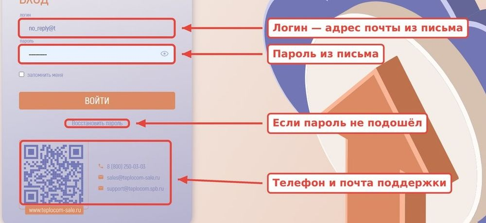
Кадр 1.3-1Страница входа teplocom.online: поля логина и пароля, «запомнить меня», кнопка «ВОЙТИ», ссылка «Восстановить пароль», QR-код и контакты — телефон 8 (800) 250-03-03, sales@teplocom-sale.ru и support@teplocom.spb.ru.
2
Введите логин и пароль из письма
Логин — это адрес электронной почты, на который пришло письмо. «Запомнить меня» отмечайте только на своём компьютере: на общем или чужом эта галочка оставит кабинет открытым для следующего человека.
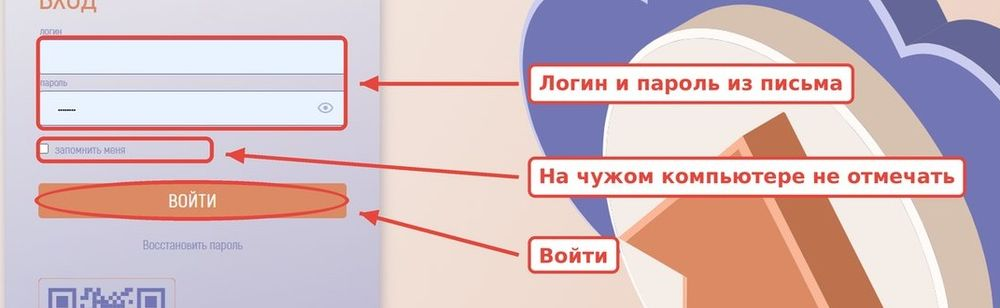
Кадр 1.3-2Заполненная форма входа перед нажатием «ВОЙТИ». Логин на кадре скрыт.
3
Смените пароль на постоянный
Не менее восьми символов. Временный пароль после смены не работает — старое письмо можно удалять.
4
Примите пользовательское соглашение
Без этого кабинет не откроется.
5
Посмотрите на главную страницу
Сверху счётчики: объекты, модемы, приборы учёта, регуляторы — с разбивкой «подключено / отключено». Ниже статистика наличия архивов, точки учёта и ошибки чтения данных. В новом кабинете всё это пусто, и это нормально: следующий шаг — создать объект, статья 4.1.
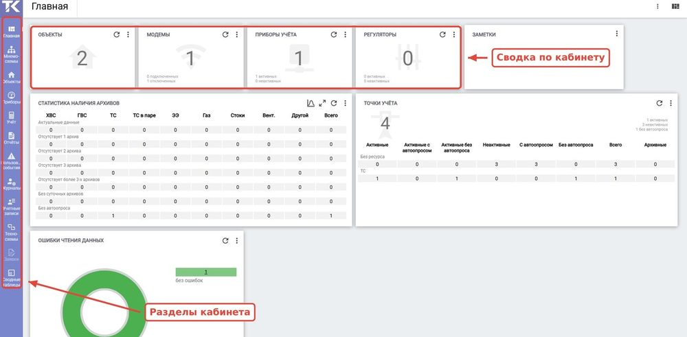
Кадр 1.3-5Главная страница после входа: счётчики объектов, модемов, приборов и регуляторов, статистика наличия архивов, точки учёта и ошибки чтения данных. Слева — разделы кабинета.
Пустая главная — это не ошибкаКабинет создан и работает, просто в нём ещё нет ни одного объекта. Виджеты наполнятся, как только появится первый объект с приборами. Набор разделов в левом меню тоже может отличаться от кабинета к кабинету — см. статью 1.4.
Если не получилось
Что видите
Почему
Что сделать
Письмо не пришло
Указана нерабочая или личная почта, письмо в спаме
Проверьте папку «Спам». Если письма нет — обратитесь к вашему менеджеру Теплоком: почтовый адрес указывается в заявке и его можно поменять.
Временный пароль не подходит
Пароль скопирован с пробелом на конце
Введите вручную, без копирования. Если не помогает — «Восстановить пароль» под кнопкой входа.
Кабинет открылся у другого сотрудника
На общем компьютере отмечена галочка «запомнить меня»
Снимите её и выйдите из кабинета. На общих компьютерах эту галочку не ставят.
Куда смотреть и где что лежит: левое меню, поиск, таблица записей.
Кабинет устроен из трёх частей. Узкая полоса слева — разделы. Рядом с ней раскрывается список подразделов выбранного раздела. В центре — таблица записей или карточка того, что вы открыли. Сверху — строка «Поиск и фильтр», счётчик найденных записей и кнопка «⋮» для настройки экрана.
Кнопка создания новой записи — оранжевая с плюсом, в правом нижнем углу. Она есть почти в каждом разделе и всегда на одном месте.
Набор разделов отличается от кабинета к кабинету: часть подключается отдельно. Если раздела из таблицы ниже у вас нет — он вашему кабинету не подключён, спросите менеджера Теплоком.
Таблица
Раздел меню
Что в нём
Главная
Виджеты — блоки со сводкой. Набор настраивается под себя, раздел 03
Мнемо-схемы
Персональные экраны для сотрудников: только их объекты, статья 3.3
Объекты
Ваши объекты. Внутри раздела: Объекты, Квартиры, Помещения, Оценка готовности к ОЗП, Документы потребителей, Документы ТСО. В карточке объекта — вкладки «Модемы», «Приборы учёта», «Точки учёта»
Приборы
Все приборы учёта кабинета одним списком, без перехода по объектам
Учёт
Показания по всем точкам: текущие значения и архивы, раздел 05
Отчёты
Готовые формы, свои шаблоны и подписки на автоматическую рассылку, раздел 06
Пользовательские события
Правила срабатывания и журнал событий с отметками об устранении, раздел 07
Учётные записи
Сотрудники, их роли и доступ к объектам, статья 1.5
Техно-схемы
Технологические схемы узлов и тепловых пунктов
Журналы
Журналы обмена с приборами и действий пользователей — есть не во всех кабинетах
Заявки
Контур заявок на обслуживание — подключается отдельно
Сводные таблицы
Один экран по всему парку вместо перехода по карточкам, статья 3.4
Справка
Встроенная справка платформы
Первое, что стоит настроить — главная страницаНабор виджетов на главной задаётся под свою работу и меняется в любой момент: статья 3.1. По умолчанию там стоит общий набор, который подходит всем и не подходит никому конкретно.
Настройка приборов и модемов, тестовый опрос, журнал обмена
Мастеру монтажной организации или сервисного центра
Назначьте дублёра сразуВторой администратор нужен не для удобства, а чтобы кабинет не оказался недоступен в отпуске или при увольнении. Число пользователей не ограничено и входит в тариф.
Четыре слова, на которых держится вся работа в кабинете. Если их перепутать, структура объекта соберётся неправильно.
Порядок вложенности всегда один: объект → модем → прибор учёта → точка учёта. Каждый следующий уровень заводится внутри предыдущего.
Таблица
Понятие
Что это
Пример
Объект
Адрес, на котором стоят приборы
Дом по улице Ленина 5; ИТП школы №12; котельная предприятия
Модем
Устройство связи, через которое опрашиваются приборы
GSM-модем на узле учёта. У одного объекта их может быть несколько
Прибор учёта
Вычислитель или счётчик
ВКТ-7, ВКТ-9, ВКГ-3Т, ПРЭМ и приборы других производителей
Точка учёта
Один измеряемый ресурс на приборе
Отопление; горячее водоснабжение; холодная вода. От числа точек зависит тариф
Точка учёта — единица тарификацииТариф считается по числу точек на объекте, а не по числу приборов. Один прибор может обслуживать две точки: отопление и горячую воду. Прежде чем заводить точки, посмотрите статью 4.4 — там о том, как не завести лишних.
Что означают поля, которые платформа просит заполнить при создании точки, и откуда взять значения.
черновик · сверить в кабинете
Часть параметров нужна для опроса, часть — только для отчёта ресурсной организации. Опрос заработает и без второй части, но отчёт без неё не примут.
Таблица
Параметр
Зачем нужен
Где взять
Тип ресурса
Определяет набор измеряемых величин
Из проекта узла учёта
Схема измерения
Как посчитано потребление: по подаче, по обратке, по разности
Из проекта или паспорта узла
Расчётная температура
Нужна для перерасчётов в отчёте
Из договора с ресурсной организацией
Подключённая нагрузка
Договорная величина, участвует в отчёте
Из договора с ресурсной организацией
Расписание опроса архивов
Когда и что забирать с прибора
Преднастроено по рекомендациям производителя, менять обычно не нужно
Договорные параметры можно внести позжеЕсли договора нет под рукой, сохраните точку без расчётной температуры и нагрузки: опрос от них не зависит. Но до первого отчёта для ресурсной организации их нужно заполнить.
Тип объекта и схема подключения определяют, какие параметры точки вам предложат и какие из них обязательны.
черновик · сверить в кабинете
Тип объекта указывается один раз при создании объекта и дальше влияет на то, что платформа предложит на точках учёта. Ошибка не критична — тип можно поменять, — но лишние поля будут сбивать.
Таблица
Тип объекта
Что обычно измеряется
На что обратить внимание
Многоквартирный дом
Отопление и горячее водоснабжение, иногда холодная вода
Чаще всего два узла на дом: это один объект и две-три точки
Индивидуальный тепловой пункт
Отопление и ГВС по контурам
Если контуров несколько, точек будет столько же
Центральный тепловой пункт
Общий ввод и отходящие контуры
Здесь важна схема измерения: по разности или по подаче
Промышленный объект
Тепло, вода, иногда газ и электроэнергия
Ресурсы разные — точек больше, тариф выше
Бюджетное учреждение
Как правило отопление и ГВС
Отчёт часто нужен в форме конкретного распорядителя, а не только ресурсника
Тип влияет на отчёт, а не только на экранФорма отчёта для ресурсной организации подбирается под тип объекта и схему измерения. Если тип указан неверно, отчёт сформируется, но ресурсник может его не принять.
Два разных набора данных, которые легко перепутать — и которые расходятся между собой на законных основаниях.
Текущие показания — это то, что прибор показывает сейчас, снятое последним опросом. Архив — это записи, которые прибор сам сложил у себя в память по часам, суткам и месяцам, а платформа забрала.
Для отчёта используется архив, а не текущие показания: архив привязан к периоду и не зависит от того, когда вы посмотрели.
Таблица
Что
Как часто обновляется
Сколько хранится
Текущие показания
каждый час
30 суток
Часовой архив
раз в час
45 суток
Суточный архив
в 01:00
3 года и более
Месячный архив
1-го числа
весь срок пользования
Журнал нештатных ситуаций
по факту события
12 месяцев
Часовой архив живёт 45 сутокЕсли для разбора спора нужен час двухмесячной давности, его уже не будет — останутся сутки. Разбирайте события по горячим следам, а не в конце сезона.
Почему одно и то же значение может выглядеть по-разному и какое из них попадёт в отчёт.
черновик · сверить в кабинете
Сырые данные — это то, что прибор отдал как есть, в своих единицах и со своими именами параметров. Унифицированные — те же данные, приведённые к единому виду, чтобы приборы разных производителей можно было сравнивать и складывать в один отчёт.
В отчёт идут унифицированные данные. Сырые нужны при разборе: если унифицированное значение выглядит странно, смотреть надо в сырые.
Расхождение с показаниями на дисплее прибораЧаще всего дело не в ошибке, а в единицах измерения или в моменте снятия: дисплей показывает накопительный итог на текущую минуту, архив — закрытый час или сутки. Прежде чем сообщать о расхождении, сравните одинаковые периоды.
Одна запись имеет две даты, и путаница между ними — частая причина спора о том, «пришли ли данные».
черновик · сверить в кабинете
Дата измерения — это период, к которому относится значение: этот час, эти сутки. Дата получения — когда платформа фактически забрала запись с прибора.
Они расходятся, когда связь пропадала: прибор считал и складывал записи в память, а платформа забрала их позже, когда связь вернулась. Данные при этом не потеряны.
Пропуск связи — не пропуск данныхПрибор хранит архив у себя. После восстановления связи платформа добирает пропущенные записи, и в архиве они встают на свои места по дате измерения. Именно поэтому событие называется «нет данных более 24 часов», а не «данные потеряны».
Собрать первый экран так, чтобы утром было видно именно то, что нужно вам.
Что понадобится
хотя бы один объект с приборами, иначе виджеты будут пустыми
Порядок действий
1
Откройте «Главная» и нажмите «⋮» в правом верхнем углу, затем «настройка виджетов»
В этом же меню: «сделать снимок страницы» — сохранить экран картинкой, и «сброс настроек виджетов» — вернуть раскладку к исходной, если настроили неудачно.
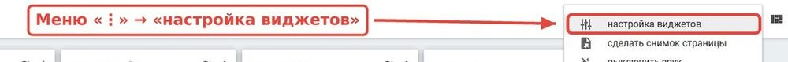
Кадр 3.1-1Меню «⋮» в правом верхнем углу главной страницы: настройка виджетов, сделать снимок страницы, выключить звук, сброс настроек виджетов.
2
Перетащите блоки в нужном порядке и уберите лишние корзиной
Экран станет синим — это режим настройки. Наверх ставьте то, на что смотрите каждый день. У каждого блока в углу красная корзина: она убирает блок со страницы, а не удаляет данные.
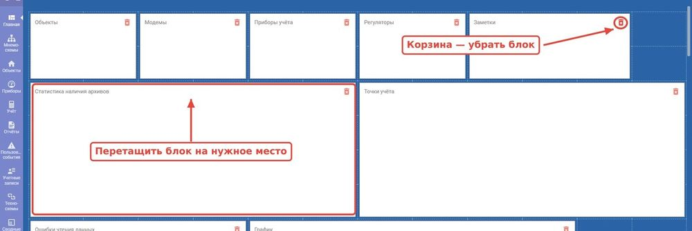
Кадр 3.1-2Режим настройки: экран синий, каждый блок в рамке, в углу блока красная корзина. Блоки перетаскиваются мышью.
3
Добавьте нужные блоки кнопкой «добавить виджет» и нажмите «сохранить»
Рядом с кнопкой счётчик виджетов. Доступны, в частности: Объекты, Модемы, Приборы учёта, Регуляторы, Заметки, Статистика наличия архивов, Точки учёта, Ошибки чтения данных, График, Сводная таблица, Задачи по исполнителям, Заявки по качеству.
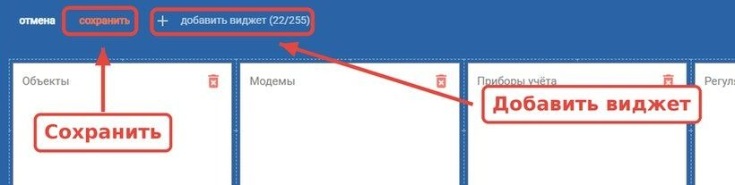
Кадр 3.1-3Верхняя панель режима настройки: «отмена», «сохранить» и «добавить виджет» со счётчиком.
4
Настройте каждый виджет отдельно через «⋮» в его углу
Это работает и вне режима настройки. У виджета свои параметры: какие объекты показывать, за какой период, какой параметр на графике. Рядом — значок обновления.
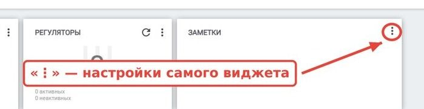
Кадр 3.1-4У каждого виджета в углу свои значки: обновление и «⋮» — настройки именно этого блока. Доступны и вне режима настройки.
5
Проверьте, что на главной видно нужное
Счётчики сверху показывают, сколько объектов, модемов, приборов и регуляторов в кабинете и сколько из них подключено. В таблице архивов проблемные значения подсвечиваются цветом.
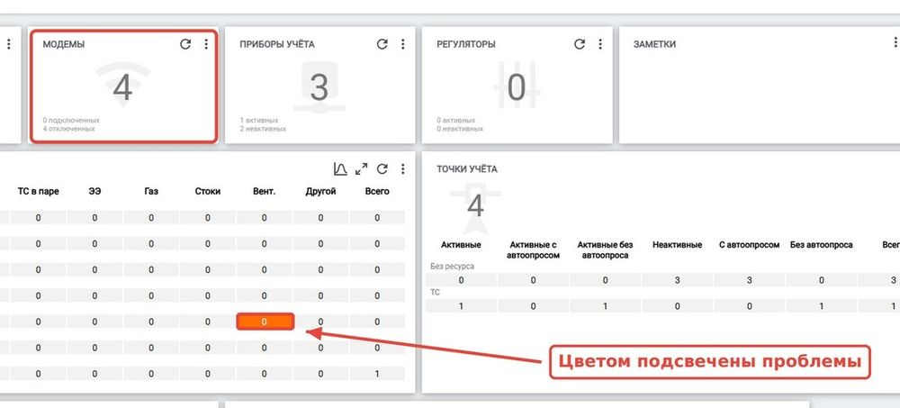
Кадр 3.1-5Собранная главная: счётчики объектов, модемов, приборов и регуляторов с разбивкой «подключено / отключено», таблица наличия архивов с цветной подсветкой, точки учёта, ошибки чтения данных, график и сводная таблица.
Собирайте главную под того, кто будет смотреть на неё каждый деньДля диспетчера сверху нужны связь и нештатные ситуации, для бухгалтерии — архивы и сводная таблица. Если настроили неудачно, «сброс настроек виджетов» в меню «⋮» вернёт исходную раскладку — начинать заново не придётся.
Если не получилось
Что видите
Почему
Что сделать
Виджеты пустые
В кабинете ещё нет объектов или данные не приходили
Виджеты наполняются данными, а не настройками. Заведите объект и приборы, раздел 04.
Случайно убрали нужный блок
Корзина в режиме настройки убирает блок со страницы
Добавьте его заново через «добавить виджет» либо «сброс настроек виджетов» в меню «⋮».
Настройки не сохранились
Вышли из режима настройки кнопкой «отмена»
Изменения применяются только по кнопке «сохранить».
Кроме главной страницы виджеты есть внутри карточек — и настраиваются они там же, отдельно.
черновик · сверить в кабинете
Набор виджетов на главной странице и внутри карточки объекта, прибора или точки — разные наборы. Настроив главную, вы не настроили карточки.
Таблица
Где
Что полезно вывести
Карточка объекта
Состав оборудования, статус опросов по объекту, последние события, потребление за период
Карточка модема
Статус связи, уровень сигнала, история подключений
Карточка прибора
Результат последнего опроса, дата поверки и межповерочный интервал, журнал обмена
Карточка точки учёта
Текущие показания, график за период, пропуски в архиве
Дата поверки на карточке прибора — рабочий инструментЕсли вывести её виджетом, срок поверки виден до того, как прибор выпадет из коммерческого учёта. Это дешевле, чем перерасчёт по нормативу.
Схема узла с живыми значениями на отдельной странице — и доступ к ней только тем, кому она нужна.
Что понадобится
объект с прибором и точкой учёта уже подключён — раздел 04
сотрудники уже заведены в «Учётных записях» — статья 1.5
Порядок действий
1
Откройте «Мнемо-схемы» в левом меню
Слева список всех схем: зелёная точка — состояние, под названием ответственный сотрудник. Значок справа открывает схему в отдельном окне — удобно вывести на монитор в диспетчерской.
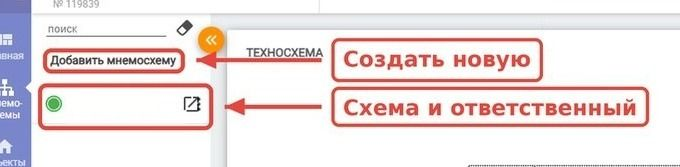
Кадр 3.3-1Раздел «Мнемо-схемы»: слева поиск, «Добавить мнемосхему» и список схем — зелёная точка состояния, название и ответственный сотрудник, значок открытия в отдельном окне.
2
Нажмите «Добавить мнемосхему», введите название и нажмите «создать»
Название давайте по зоне ответственности — «Участок №3, Петров», а не «Схема 1». По нему сотрудник найдёт свою схему в списке.
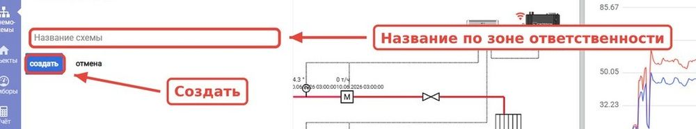
Кадр 3.3-2Создание мнемосхемы: поле «Название схемы» и кнопки «создать» и «отмена».
3
Соберите схему: техносхема узла и график
На техносхеме видно подачу и обратку, задвижки, расходомеры, прибор и модем — с живыми значениями и отметкой времени, когда они получены. Под модемом стоит время последнего соединения. Карандаш в углу виджета открывает редактор схемы. Рядом виджет «График» с температурами за выбранный период.
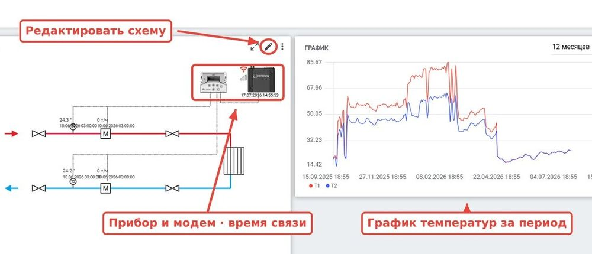
Кадр 3.3-3Собранная мнемосхема: виджет «Техносхема» с подачей и обраткой, задвижками, расходомерами, живыми значениями и отметками времени, прибором и модемом со временем последнего соединения; рядом виджет «График» с температурами T1 и T2 за 12 месяцев.
4
Откройте настройку доступа и распределите сотрудников
Два столбца: «Запрещено» и «Доступно». Переносите людей стрелкой. У каждого в столбце «Доступно» есть переключатель «только просмотр» — с ним человек видит схему, но не может её править. Здесь же «ссылка на мнемосхему» для быстрого перехода. Не забудьте «сохранить».
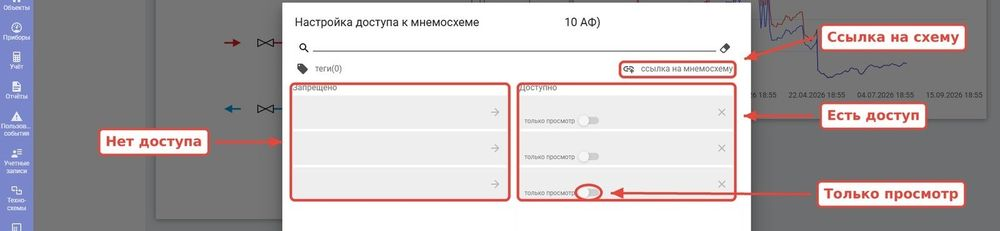
Кадр 3.3-4Диалог «Настройка доступа к мнемосхеме»: поиск, теги, «ссылка на мнемосхему», столбцы «Запрещено» и «Доступно», переключатель «только просмотр» у каждого сотрудника, кнопки «отмена» и «сохранить».
Мнемосхема — не замена ролямОна задаёт, что человек видит на своём экране, а не что ему разрешено в кабинете. Права по-прежнему определяет роль, а доступ к объектам — настройка пользователя, статья 1.5. Мнемосхема сверху добавляет одно: удобную картинку узла для того, кто за него отвечает.
Если не получилось
Что видите
Почему
Что сделать
Сотрудник не видит мнемосхему
Он остался в столбце «Запрещено» или доступ не сохранён
Откройте настройку доступа, перенесите сотрудника в «Доступно» и нажмите «сохранить».
Сотрудник случайно меняет схему
Не включён переключатель «только просмотр»
Включите его в карточке сотрудника в столбце «Доступно».
На схеме старые значения
Прибор давно не отвечал
Смотрите время под значением и время последнего соединения модема. Дальше — по разделу 08.
Свой экран, который вы рисуете сами: слева объекты, сверху параметры, а значения за пределами нормы подсвечиваются.
Что понадобится
объекты с точками учёта, по которым идут данные
понимание, какие параметры вы сравниваете между объектами
допустимые пределы по этим параметрам — из договора или из практики
Порядок действий
1
Откройте «Сводные таблицы» и нажмите «+»
В списке видно название таблицы, кто её создал и когда. Таблиц может быть несколько — например «Отклонения» для ежедневного взгляда и отдельная для отчётного дня.
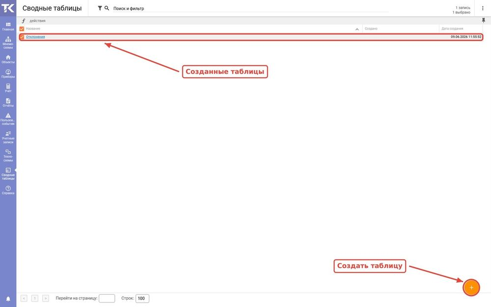
Кадр 3.4-1Раздел «Сводные таблицы»: список таблиц с названием, автором и датой создания, кнопка «+» в правом нижнем углу.
2
Соберите каркас: столбцы и строки
Слева команды «создать новый столбец», «создать новую строку» и «добавить внешнюю ячейку». Строка — это объект, столбец — параметр. Там же три переключателя: «Подсвечивать дублирующиеся параметры» — ловит одну и ту же точку, случайно выведенную дважды; «Выводить ошибки как предупреждения» и «Выводить предупреждения в окне». Поле «Период актуальности данных (мин.)» задаёт, через сколько минут значение считается устаревшим.
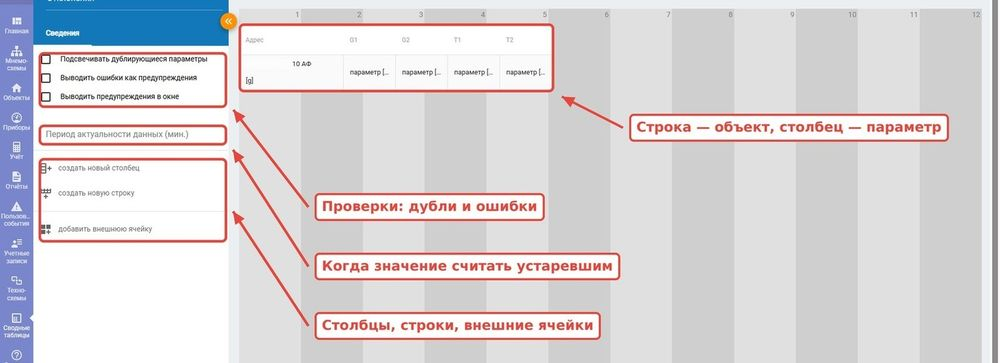
Кадр 3.4-2Редактор сводной таблицы. Слева: переключатели «Подсвечивать дублирующиеся параметры», «Выводить ошибки как предупреждения», «Выводить предупреждения в окне», поле «Период актуальности данных (мин.)» и команды «создать новый столбец», «создать новую строку», «добавить внешнюю ячейку». Справа сетка: шапка «Адрес · G1 · G2 · T1 · T2» и строка объекта.
3
Заполните заголовки и названия объектов
Щелчок по ячейке открывает «Параметры ячейки». Для текстовой ячейки это обычный редактор: начертание, цвет текста и фона. «Использовать базовый стиль столбца» оставьте включённым, чтобы таблица не разъезжалась по оформлению. Кнопка «Скопировать настройки из другой ячейки» экономит время на однотипных строках.
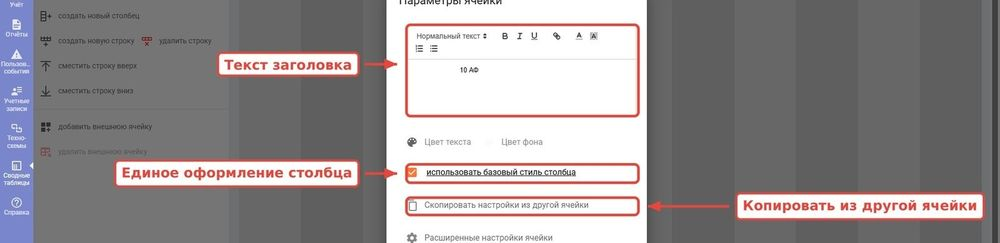
Кадр 3.4-3Окно «Параметры ячейки» для текстовой ячейки: редактор текста с начертанием и списками, цвет текста и фона, «использовать базовый стиль столбца», «Скопировать настройки из другой ячейки», «Расширенные настройки ячейки» и «Сброс настроек».
4
Привяжите ячейки к параметрам и задайте допустимые пределы
В ячейке значения выберите «Тип сущности» — например «Точка учёта/контур регулятора», затем саму точку и параметр: M1, T1, G1. Укажите единицу измерения и число знаков после запятой. Поля «Допустимо с» и «Допустимо по» — это и есть контроль: значения вне диапазона видно сразу, без ручной сверки.
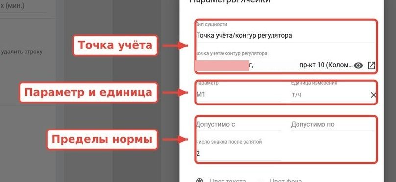
Кадр 3.4-4Окно «Параметры ячейки» для значения: тип сущности «Точка учёта/контур регулятора», выбранная точка, параметр M1, единица измерения т/ч, поля «Допустимо с» и «Допустимо по» и число знаков после запятой.
Ради «Допустимо с» и «Допустимо по» это всё и делаетсяСводная таблица без пределов — просто длинный список цифр, который никто не читает. С пределами это ежедневный контроль: оператор открывает один экран и видит, где значение вышло за норму. Начните с одного-двух параметров, по которым у вас реально бывают споры с ресурсной организацией, и только потом расширяйте таблицу.
Если не получилось
Что видите
Почему
Что сделать
В таблице пусто или прочерки
Точка не опрашивается либо данные старше «Периода актуальности»
Проверьте точку и прибор — разделы 04 и 08. Если данные приходят раз в час, ставить период актуальности в 10 минут бессмысленно.
Как находить нужный объект, когда их становится больше, чем помещается на экран.
Что понадобится
парк из нескольких десятков объектов, иначе смысла нет
теги уже проставлены на объекты — иначе фильтровать будет не по чему
Порядок действий
1
Найдите запись через строку «Поиск и фильтр»
Поиск работает внутри того раздела, в котором вы находитесь, и ищет по названию записи. Справа счётчик найденного: если он показывает ноль, вы либо не в том разделе, либо ищете по адресу там, где записи названы иначе.
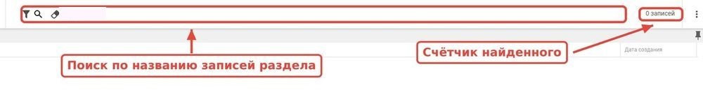
Кадр 3.5-1Строка «Поиск и фильтр» с введённым запросом и счётчик записей справа. Поиск работает внутри текущего раздела и ищет по названию записей.
2
Откройте панель фильтров значком слева от лупы
Панель делится надвое. Слева наборы: «Все» и «Архивные» — архивные записи по умолчанию не показываются. Справа условия отбора: даты создания, организации, типы объектов, режим работы, владельцы, источники, муниципальные образования, тепловые инспекторы, участки тепловой инспекции, пользовательские события и пять видов тегов.
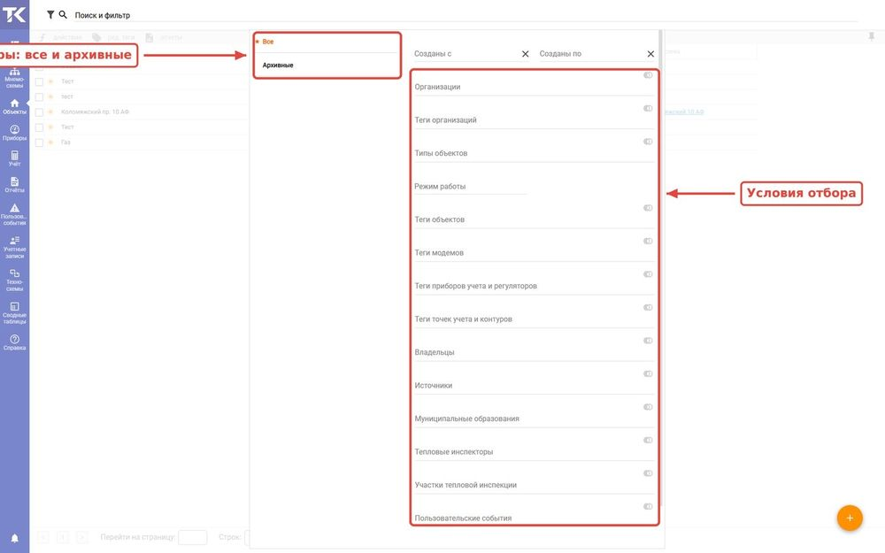
Кадр 3.5-2Панель фильтров: слева наборы «Все» и «Архивные», справа условия отбора — даты создания, организации, типы объектов, режим работы, владельцы, источники, муниципальные образования, тепловые инспекторы, участки тепловой инспекции, пользовательские события и теги организаций, объектов, модемов, приборов учёта и регуляторов, точек учёта и контуров.
3
Задайте условия
Каждое поле работает как поиск по списку: наберите первые буквы или выберите из выпадающего перечня. Выбранное показывается серой плашкой с крестиком — условий можно набрать сколько угодно, они складываются. Рядом с большинством полей есть переключатель: включите его, нажмите «Применить» и сравните выборку — так вы за минуту поймёте, как он меняет отбор.
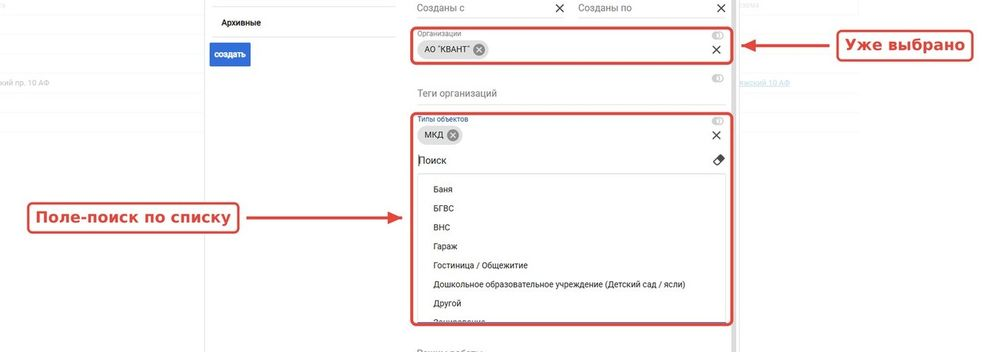
Кадр 3.5-3Заданные условия: организация «АО КВАНТ» и тип объекта «МКД» показаны серыми плашками с крестиком. Поле типа объекта работает как поиск по списку.
4
Нажмите «Применить», а нужный набор сохраните кнопкой «создать»
«Сбросить» очищает все условия разом. Когда условия заданы, слева появляется «создать» — она сохраняет текущий набор, чтобы не собирать его каждый раз. Это и есть замена папкам: сохранённый фильтр «мой участок» открывается одним щелчком.
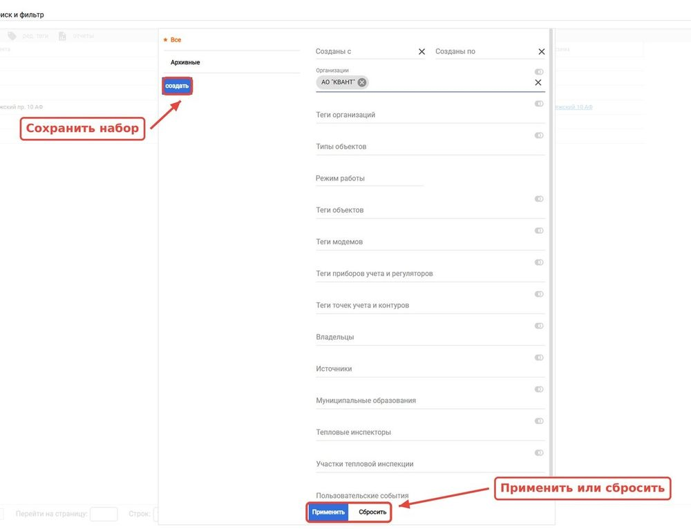
Кадр 3.5-4Панель с заданными условиями: слева появилась кнопка «создать» для сохранения набора, внизу «Применить» и «Сбросить».
Теги — единственный способ разложить парк по своей логикеПапок и групп в платформе нет. Зато теги есть на пяти уровнях сразу: организации, объекты, модемы, приборы учёта и регуляторы, точки учёта и контуры. Проставляются они кнопкой «ред. теги» над таблицей — отметьте записи галочками и задайте метку: «участок 3», «на поверке», «спорный». Дальше фильтр по тегу собирает нужную группу за секунду. Один тег, заведённый в первый месяц, экономит потом часы.
Если не получилось
Что видите
Почему
Что сделать
Поиск ничего не находит
Вы в другом разделе или ищете по полю, которого нет в этом списке
Проверьте, в каком разделе находитесь. Поиск идёт по названиям записей текущего раздела, а не по всему кабинету.
Объект пропал из списка
Он архивный, а показываются только действующие
Переключитесь на «Архивные» в левой части панели фильтров.
Фильтр не сбрасывается
Условия остались с прошлого раза
Нажмите «Сбросить» в панели фильтров: он очищает все условия разом.
Фильтровать не по чему
Теги ещё не проставлены
Отметьте объекты галочками и нажмите «ред. теги» над таблицей. Без тегов фильтр умеет отбирать только по тому, что платформа знает сама: тип, организация, адрес.
Объект — это адрес, на котором стоят приборы: дом, тепловой пункт или предприятие. С него начинается подключение.
Что понадобится
точный адрес объекта
тип объекта: дом, тепловой пункт, детский сад и так далее
рабочее название объекта — его увидит ресурсная организация в отчёте
расчётные температуры из договора — вносятся уже в карточке объекта, можно позже
Порядок действий
1
Откройте раздел «Объекты» в левом меню
Откроется таблица всех объектов: название, адрес, наличие событий, дата создания и мнемосхема. Сверху — «Поиск и фильтр» и счётчик записей, над таблицей — «действия», «ред. теги» и «отчёты» для объектов, отмеченных галочками.
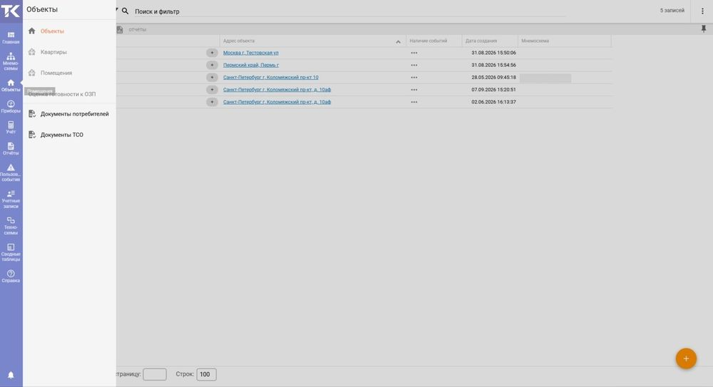
Кадр 4.1-1Раздел «Объекты» с раскрытым списком подразделов: Объекты, Квартиры, Помещения, Оценка готовности к ОЗП, Документы потребителей, Документы ТСО. В таблице — адрес объекта, наличие событий, дата создания и мнемосхема.
2
Нажмите «+» в правом нижнем углу
Оранжевый круг с плюсом. Откроется форма «Создание объекта». Пока форма не сохранена, объект не создан: закрытие формы ничего не оставит.
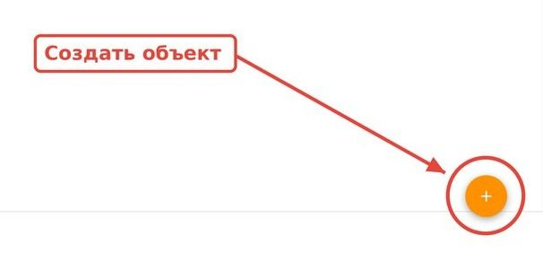
Кадр 4.1-2Кнопка создания нового объекта — оранжевый круг с плюсом в правом нижнем углу. Над таблицей — «действия», «ред. теги» и «отчёты»: они работают с объектами, отмеченными галочками слева.
3
Начните вводить адрес и выберите его из списка
Достаточно первых букв: платформа подставляет адреса из государственного реестра. Выбирайте из подсказок, а не дописывайте вручную — от выбранного адреса зависят часовой пояс и метеостанция объекта.
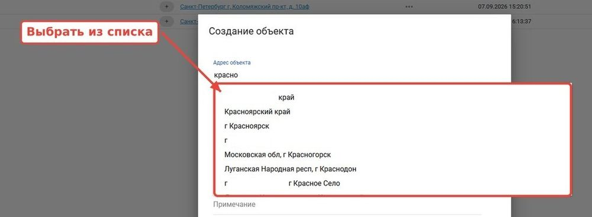
Кадр 4.1-3Форма «Создание объекта». После первых букв в поле адреса открывается список из государственного адресного реестра — адрес выбирается из него, а не дописывается вручную.
4
Выберите тип объекта
Поле «Тип объекта» — это поиск по списку: многоквартирный дом, тепловой пункт, котельная, детский сад, гостиница, гараж и другие. Наберите первые буквы или пролистайте список. Если ничего не подходит — «Другой».
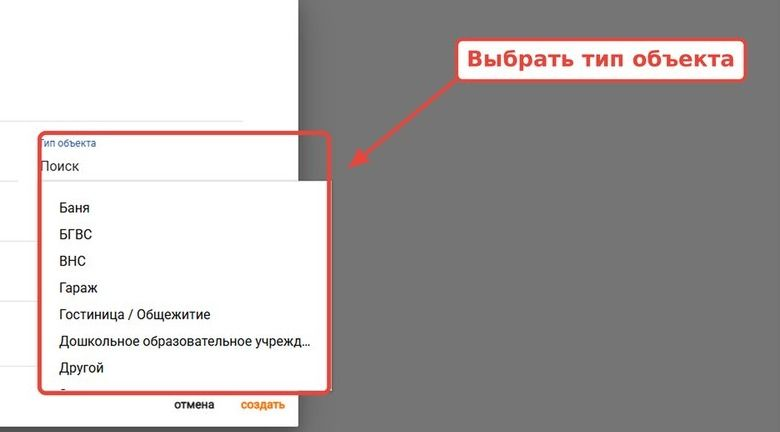
Кадр 4.1-4Поле «Тип объекта» работает как поиск по списку: баня, БГВС, ВНС, гараж, гостиница или общежитие, дошкольное образовательное учреждение, другой и далее по списку.
5
Заполните название, проверьте метеостанцию и нажмите «создать»
Название увидит ресурсная организация в отчёте — давайте рабочее, а не «Объект 1». Метеостанция подставляется по адресу автоматически, её можно заменить. «Участок тепловой сети» и «Примечание» заполнять не обязательно.
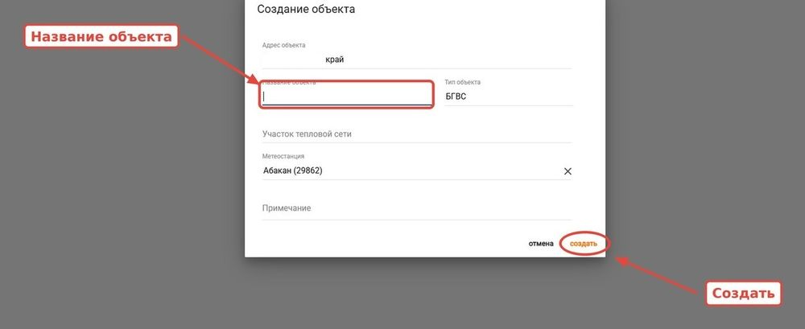
Кадр 4.1-5Заполненная форма: адрес и тип выбраны, метеостанция подставилась автоматически. Остаётся ввести название объекта и нажать «создать». «Участок тепловой сети» и «Примечание» не обязательны.
6
Проверьте карточку созданного объекта
Слева — сведения: адрес, тип, часовой пояс, метеостанция, код ФИАС, владелец. Справа — блоки «Модемы», «Приборы учёта», «Регуляторы» и «Точки учёта»: их вы заполните на следующих шагах. Ниже — «Параметры объекта», там задаются расчётные температуры из договора.
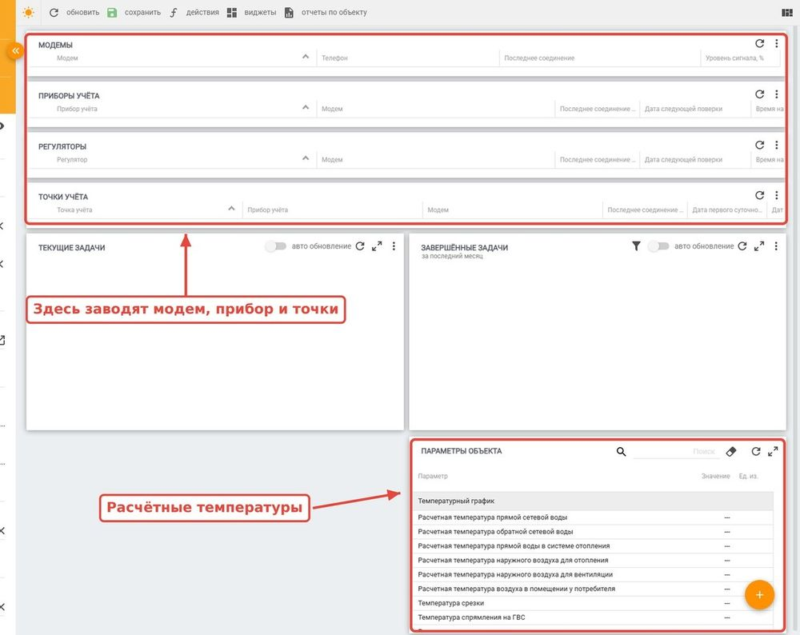
Кадр 4.1-6Карточка созданного объекта. Слева сведения: адрес, тип, часовой пояс, метеостанция, код ФИАС, владелец. Справа блоки «Модемы», «Приборы учёта», «Регуляторы» и «Точки учёта» — они заполняются на следующих шагах. Ниже справа «Параметры объекта»: там задаются расчётные температуры из договора.
Один объект — один адрес, даже если узлов учёта несколькоЕсли в доме два узла — отопление и горячая вода на разных вводах, — создавайте ОДИН объект. К нему привязывается несколько модемов и приборов. Два объекта на один дом разделят отчёт и историю, и собрать их обратно будет отдельной работой.
Если не получилось
Что видите
Почему
Что сделать
Адрес не находится в справочнике
Дом новый или отсутствует в государственном реестре
Выберите ближайший существующий адрес и уточните расположение в названии объекта. На опрос это не влияет.
Не нахожу свой тип объекта
Список длинный, видна только часть
Наберите первые буквы в поле «Тип объекта» — список отфильтруется. Если подходящего нет, выберите «Другой».
Не знаю расчётные температуры
Они берутся из договора с ресурсной организацией
В форме создания их нет: они задаются в карточке объекта в блоке «Параметры объекта». Опрос от них не зависит, отчёт для ресурсника — зависит.
Создал два объекта на один дом
На дом с двумя узлами по ошибке создано два объекта
Удалите лишний до того, как заведёте на нём приборы. После заведения приборов перенос точек — отдельная операция.
Модем — устройство связи, через которое опрашиваются приборы. Без него данных не будет, даже если прибор исправен.
Что понадобится
объект уже создан — статья 4.1
модель модема
номер сим-карты, установленной в модеме
сим-карта активирована, передача данных включена
Порядок действий
1
Откройте карточку объекта и нажмите «+» в правом нижнем углу
В открывшемся меню выберите «создать модем». Здесь же создаются прибор учёта, точка учёта и регулятор — но начинают всегда с модема: остальное привязывается к нему.
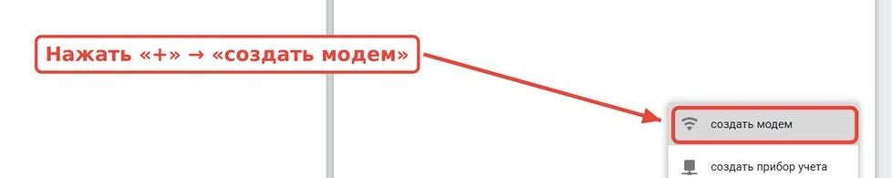
Кадр 4.2-1Меню кнопки «+» в карточке объекта: создать модем, прибор учёта, точку учёта, регулятор и контур регулятора. Квартира, абонент и тепловой пункт недоступны для этого типа объекта.
2
Выберите модель модема
Поле «Модель модема» работает как поиск: наберите первые буквы и выберите строку из списка. Для обычного GSM-модема, работающего по звонку, это «CSD-модем».
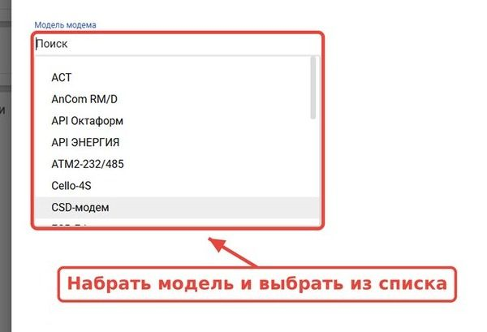
Кадр 4.2-2Окно «Создание модема». Поле «Модель модема» — это поиск по списку: ACT, AnCom RM/D, API Октаформ, API ЭНЕРГИЯ, ATM2-232/485, Cello-4S, CSD-модем и далее.
3
Проверьте объект и заполните карточку модема
Объект подставляется сам — тот, из которого вы нажали «+». «Протокол модемной связи» оставьте «Автоматически», «Тип подключения» — «Прямое подключение», если не сказано иное. Пока телефон не введён, кнопка «создать» неактивна.
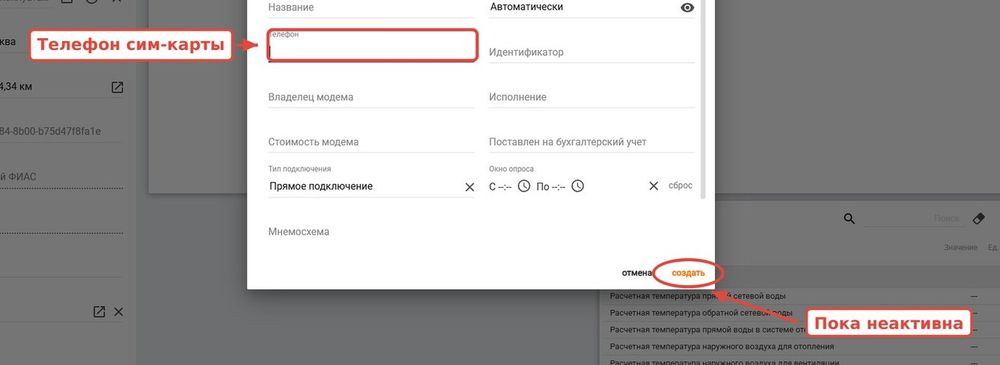
Кадр 4.2-3Форма модема после выбора модели: объект подставлен, протокол связи «Автоматически», тип подключения «Прямое подключение». Телефон пуст — кнопка «создать» серая и не нажимается.
4
Введите номер сим-карты в поле «Телефон» и нажмите «создать»
Номер в формате +7… Как только поле заполнено, кнопка «создать» становится активной.
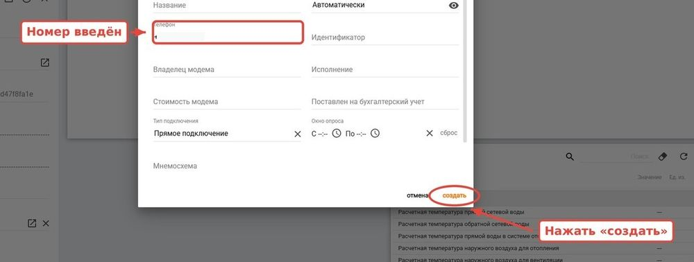
Кадр 4.2-4Тот же экран с введённым номером сим-карты. Кнопка «создать» стала оранжевой — форму можно сохранить.
5
Убедитесь, что модем появился в блоке «Модемы»
Название платформа собирает сама из номера и модели — придумывать его не нужно. Внизу экрана появляется сообщение «Успешно».
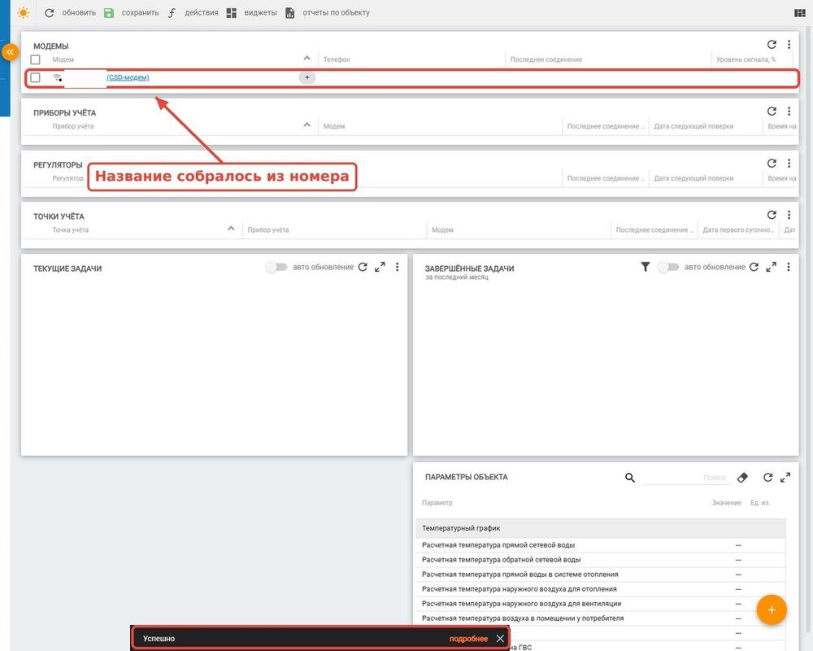
Кадр 4.2-5Модем появился в блоке «Модемы»: название «062700967 (CSD-модем)» платформа собрала сама из номера и модели. Внизу экрана — сообщение «Успешно».
6
Отметьте модем и в «действия» нажмите «подключить»
Пока модем не подключён, опрос не идёт. В этом же меню «отключить» — на время ремонта, и «удалить модем(ы) (архивировать)».
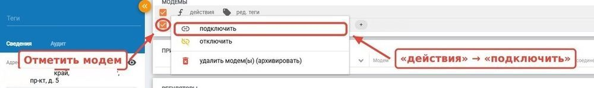
Кадр 4.2-6Модем отмечен галочкой — над блоком появились «действия» и «ред. теги». В меню «действия»: подключить, отключить, удалить модем(ы) (архивировать).
Сим-карта и связь — на стороне клиентаПо п. 3.6 договора сим-карту оформляете вы. Отрицательный баланс — самая частая причина, по которой объект «вдруг перестал отвечать». Назначьте ответственного за баланс и включите автоплатёж.
Если не получилось
Что видите
Почему
Что сделать
Кнопка «создать» не нажимается
Не заполнено поле «Телефон»
Введите номер сим-карты: без него модем создать нельзя.
Не нахожу свою модель в списке
Список длинный, названия отличаются от маркировки на корпусе
Наберите первые буквы названия. Если модели нет совсем — напишите менеджеру Теплоком, модель добавят.
Модем создан, но данных нет
Не выполнено «подключить»
Отметьте модем галочкой, «действия» → «подключить». Без этого опрос не запускается.
Модем подключён, но связи нет
Сим-карта не активирована, не включена передача данных или нулевой баланс
Проверьте в личном кабинете оператора: карта активна, услуга передачи данных подключена, баланс положительный.
Уровень сигнала ниже 30%
Модем в подвале, за перекрытием, далеко от базовой станции
Нужна внешняя антенна или перенос модема. Это работа монтажной организации, см. чек-лист 4.5.
Самый ответственный шаг: здесь три числа должны совпасть, иначе опрос не пойдёт.
Что понадобится
модем объекта создан и подключён — статья 4.2
модель прибора
серийный номер прибора
сетевой адрес и скорость обмена из настроек самого прибора
Порядок действий
1
Откройте карточку объекта, нажмите «+» и выберите «создать прибор учета»
Прибор заводится внутри объекта. Модем к этому моменту уже должен быть создан — статья 4.2.
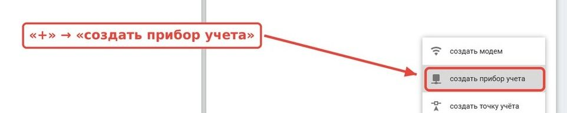
Кадр 4.3-1То же меню кнопки «+» в карточке объекта, пункт «создать прибор учета».
2
Выберите тип модели, модель и драйвер прибора
«Тип модели прибора» — например «Тепловычислитель», дальше модель: ВКТ-7, ВКТ-9, ВКГ-3Т, ПРЭМ и другие. Драйвер подставляется по модели. Ниже заполните название и серийный номер, а также «Пригодность», «Дата производства», «Дата установки ПУ» и «Монтажная организация» — по ним потом разбирают спорные случаи и следят за поверкой.
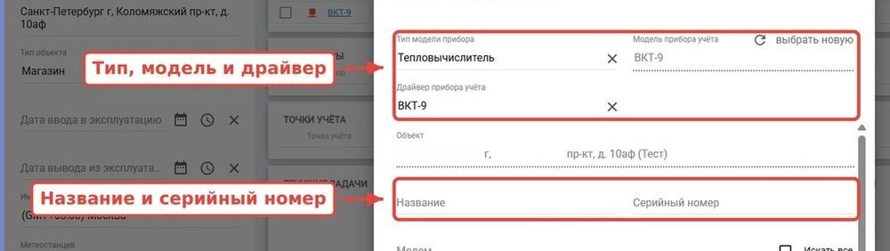
Кадр 4.3-2Верх формы «Создание прибора учёта»: тип модели прибора, модель и ссылка «выбрать новую», драйвер, подставленный объект, название и серийный номер.
3
Привяжите прибор к модему и задайте сетевой адрес, скорость и канал
В поле «Модем» выбирается модем этого объекта, галочка «Искать все» расширяет поиск. Сетевой адрес и скорость берутся из настроек самого прибора, канал для ВКТ — «Цифровой RS232 (485)». Здесь же «Тип учёта» — коммерческий или технический, и «Вид питания».
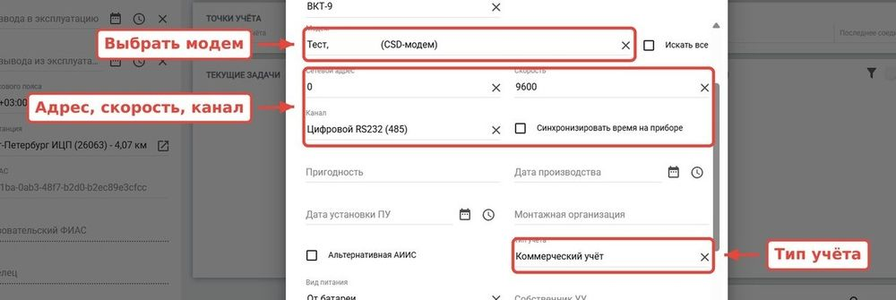
Кадр 4.3-3Заполненная форма: модем «Тест, 217682230 (CSD-модем)», сетевой адрес 0, скорость 9600, канал «Цифровой RS232 (485)», тип учёта «Коммерческий учёт», вид питания «От батареи».
4
Нажмите «создать» и проверьте строку в блоке «Приборы учёта»
Прибор появится в списке объекта. Красный значок и «нет данных» — это нормально: прибор создан, но ещё не активирован и ни разу не опрошен.
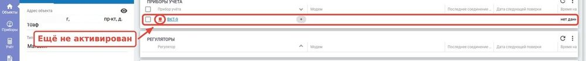
Кадр 4.3-4Строка ВКТ-9 в блоке «Приборы учёта» сразу после создания: красный значок и «нет данных» в колонке.
5
Отметьте прибор, «действия» → «активировать», затем «считать настроечные параметры»
«Считать настроечные параметры» и есть тестовый опрос: платформа обращается к прибору и забирает его настройки. Прошло — значит связь есть и параметры совпали. В том же меню «синхронизировать время», автоматическое чтение настроек и «удалить ПУ (архивировать)».
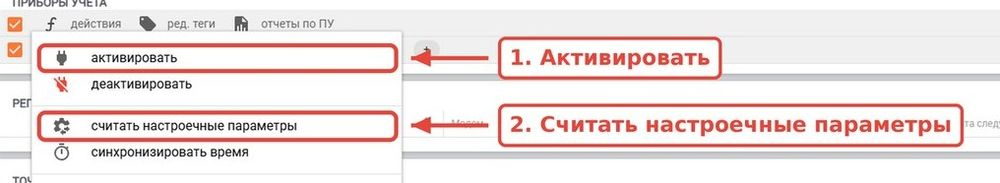
Кадр 4.3-5Меню «действия» прибора учёта: активировать, деактивировать, считать настроечные параметры, синхронизировать время, включение и выключение автоматического чтения настроек, удалить ПУ (архивировать).
Три значения скорости обмена должны совпадатьСкорость, выставленная в самом приборе; скорость, настроенная в модеме; скорость, указанная в карточке. Несовпадение — самая частая причина неудачного опроса, и на экране оно выглядит просто как ошибка чтения. Проверяйте все три, а не только карточку.
Если не получилось
Что видите
Почему
Что сделать
В списке красный значок и «нет данных»
Прибор создан, но не активирован
Отметьте прибор галочкой, «действия» → «активировать». Создание и активация — разные действия.
Настроечные параметры не читаются, прибор не отвечает
Не совпадает скорость обмена
Сверьте три значения: в приборе, в модеме, в карточке. Заводские — 9600 для ВКТ, 9600 или 19200 для ПРЭМ.
Опрос не проходит, скорость совпадает
Неверный сетевой адрес или канал
Сетевой адрес смотрится в меню самого прибора, у приборов на одной линии адреса разные. Для ВКТ канал — «Цифровой RS232 (485)».
Опрос идёт, но данные пустые
Прибор считает не по всем каналам или интерфейс опломбирован
Проверьте на месте: часть модификаций отдаёт данные только по части каналов. Работа для монтажника или сервисного центра.
Прибор на батарейном питании быстро садится
Частый опрос через интерфейс расходует батарею
В карточке прибора «Вид питания» покажет «От батареи». На узел нужен блок сетевого питания. Норматив работы с интерфейсом — до пяти часов в месяц, см. чек-лист 4.5.
Последний шаг подключения: после создания точки в кабинет начинают приходить данные.
Что понадобится
прибор учёта создан и активирован — статья 4.3
ресурс точки: теплоснабжение, ГВС, ХВС, электроэнергия, газ
тип схемы и назначение точки из проекта узла учёта
понимание, сколько точек на приборе — статья 2.1
Порядок действий
1
Откройте карточку объекта, нажмите «+» и выберите «создать точку учёта»
Точка создаётся из того же меню, что модем и прибор. Прибор к этому моменту должен быть создан и активирован — статья 4.3.
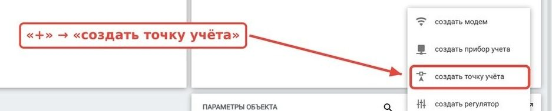
Кадр 4.4-1То же меню кнопки «+» в карточке объекта, пункт «создать точку учёта».
2
Проверьте прибор и ресурс, задайте тип схемы и название точки
«Прибор учёта» и «Выбор ресурса» определяют, откуда и какой ресурс читается: ТС — теплоснабжение. «Тип схемы» — закрытая или открытая, берётся из проекта узла. В поле «Точка учёта» задаётся короткое имя, например ТС1: под ним точка будет видна в списках и отчётах.
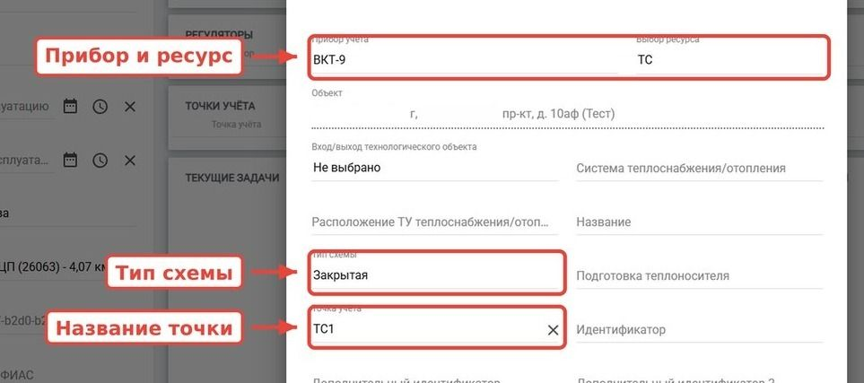
Кадр 4.4-2Верх формы «Создание точки учёта»: прибор ВКТ-9, ресурс ТС, подставленный объект, система теплоснабжения, тип схемы «Закрытая» и название точки ТС1.
3
Прокрутите форму вниз и отметьте назначение точки
Галочки назначения: ГВС, отопление, вентиляция, технологические нужды, ресурсы на собственные нужды источника, подключение к коллектору источника ТЭ. «Автоматический опрос» включён по умолчанию — оставьте его. «Передавать показания в биллинг» включайте только если биллинг настроен.
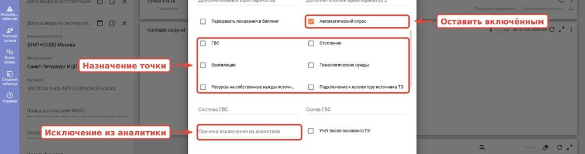
Кадр 4.4-3Нижняя часть формы: назначение точки — ГВС, отопление, вентиляция, технологические нужды, ресурсы на собственные нужды источника, подключение к коллектору источника ТЭ; переключатели «Передавать показания в биллинг» и «Автоматический опрос»; поля «Система ГВС», «Схема ГВС», «Причина исключения из аналитики» и «Учёт после основного ПУ».
4
Нажмите «создать» и проверьте строку в блоке «Точки учёта»
В строке видно имя точки, ресурс в скобках и прибор, к которому она привязана. Колонки «Последнее соединение» и «Дата первого суточного архива» заполнятся после первого успешного опроса.
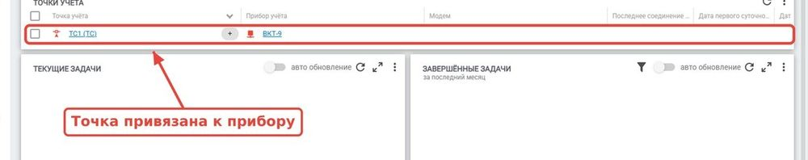
Кадр 4.4-4Строка «ТС1 (ТС)» в блоке «Точки учёта» карточки объекта с привязанным прибором ВКТ-9.
5
Дождитесь первых данных
По договору данные появляются в кабинете в течение часа после активации, автоматический опрос идёт не чаще одного раза в час. Проверять раньше смысла нет.
Заводите только реальные точки учётаСтоимость сервиса считается по числу точек учёта на объекте — условия в Приложении №1 к договору. Точка, заведённая «на всякий случай», войдёт в расчёт наравне с рабочими. Заводите столько точек, сколько их фактически на объекте.
Если не получилось
Что видите
Почему
Что сделать
Данных нет больше часа
Не включён автоматический опрос или прибор не активирован
Откройте точку и проверьте галочку «Автоматический опрос», затем активацию прибора — статья 4.3. Если всё так, проверьте связь с модемом и обратитесь в поддержку.
Данные пришли, но значения нулевые
Прибор не считает по этому каналу или неверный тип схемы
Сверьте тип схемы и назначение точки с проектом узла учёта.
Не знаю, сколько точек заводить
Один прибор может обслуживать несколько ресурсов
Смотрите проект узла: сколько ресурсов измеряется, столько точек. Отопление и ГВС — две точки, даже если прибор один.
Точка не должна попадать в аналитику
Технический учёт, дубль или временная точка
В форме есть поле «Причина исключения из аналитики». Заполните его: точка останется и будет опрашиваться, но не исказит отчёты.
Пятнадцать проверок, которые дешевле сделать до выезда, чем после. Заполняется один раз на объект.
Каждый пункт — либо «да», либо работа, которую нужно выполнить до подключения. Пункты с ответом «нет» собираются внизу в список работ для монтажной организации.
Заполнять можно прямо здесь: ответы сохраняются в браузере. Кнопка «Скачать для заполнения» отдаёт отдельный файл — его можно положить на телефон или ноутбук монтажника, заполнить без интернета и распечатать или сохранить в PDF для приложения к акту.
Заполнить и скачать
Ответы сохраняются в этом браузере
Прибор учёта и поверкаКритично: без этого подключать нельзя
1
Прибор учёта исправен и считает
Диспетчеризация поверх неработающего учёта не даёт ничего
2
Поверка действующая, срок не истёк
Истёкший межповерочный интервал создаёт презумпцию искажения данных
3
Известна дата следующей поверки
Из неё считается напоминание за шесть месяцев
Питание, интерфейс, монтаж
4
На узле есть сетевое питание
Постоянный опрос через интерфейс садит батарею вычислителя
5
Интерфейсный выход прибора доступен и не опломбирован
Опломбированный выход — отдельное согласование с ресурсной организацией
6
Известны сетевой адрес и скорость обмена прибора
Три значения скорости должны совпасть, статья 4.3
7
Заземление узла выполнено
Без него интерфейс работает нестабильно
8
Есть гальваническая развязка на линии интерфейса
Защищает прибор и модем от наводок
Связь
9
Уровень сигнала не ниже 50%
Ниже 30% связь будет рваться
10
Определён тип канала: GPRS/4G или CSD
На CSD канал работает медленнее и стоит дороже
11
Сим-карта оформлена, активна, передача данных включена
Зона клиента по п. 3.6 договора
12
Назначен ответственный за баланс сим-карты
Отрицательный баланс — частая причина «объект перестал отвечать»
Организация и люди
13
Есть место для установки модема и подвод питания
Иначе выезд закончится осмотром
14
Известен владелец объекта и получено согласие на подключение
Без согласия владельца подключение оформить нельзя
15
Назначены администратор кабинета и дублёр
Без дублёра доступ теряется в отпуске
да0
нет0
не применимо0
без ответа15
Ответьте на все пункты — внизу появится вывод
Сделать до монтажа
Главная причина, по которой проекты не взлетаютДиспетчеризацию ставят на узел, где учёт и без неё работал плохо. Первые три пункта этого списка важнее остальных двенадцати: если прибор не считает или поверка просрочена, подключение только сделает проблему видимой, но не решит её.
Все объекты на карте вместо списка — полезно, когда парк разбросан по городу или региону.
Что понадобится
у объектов заполнены адреса — карта строится по ним
Порядок действий
1
Откройте раздел «Объекты»
Над таблицей три кнопки: «действия», «ред. теги» и «отчеты». Карта прячется именно в «отчеты» — это неочевидно, но переключателя «список / карта» в платформе нет.
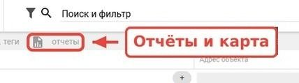
Кадр 4.6-1Раздел «Объекты»: список из шести объектов и панель «действия · ред. теги · отчеты» над таблицей.
2
Нажмите «отчеты» и выберите «на карте (Яндекс)» или «на карте (OSM)»
Две карты равноценны, выбирайте привычную. В этом же меню лежат другие сводные представления по всем объектам: температурные графики, договорные нагрузки, нормативное потребление, параметры для отчёта, расширенный реестр параметров, файлы на объектах и подробная информация.
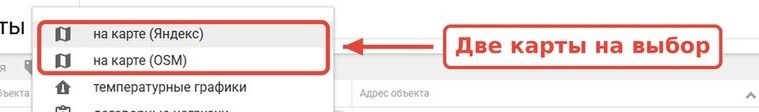
Кадр 4.6-2Меню «отчеты»: на карте (Яндекс), на карте (OSM), температурные графики, договорные нагрузки, нормативное потребление, параметры для отчёта, расширенный реестр параметров, файлы на объектах, подробная информация.
3
Рассмотрите метки на карте
Цифра в метке — сколько объектов собрано в этой точке: несколько объектов по одному адресу показываются одной меткой. Внизу слева легенда: зимний режим и летний режим. Карта показывает режим объекта, а не наличие связи.
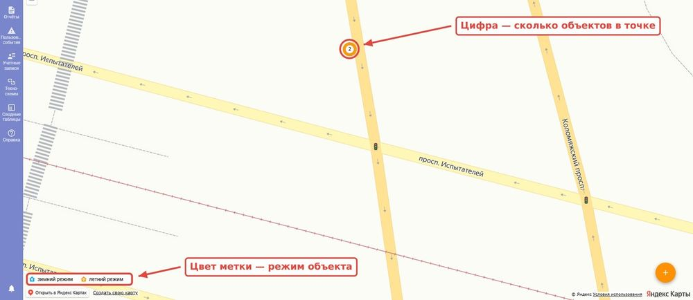
Кадр 4.6-3Карта Яндекса с меткой-кластером: цифра 2 означает два объекта по одному адресу. Внизу слева легенда «зимний режим» и «летний режим».
4
Щёлкните по метке
Слева откроется список объектов этой точки, справа — карточка выбранного: название и адрес ссылкой. По ссылке попадаете внутрь объекта.
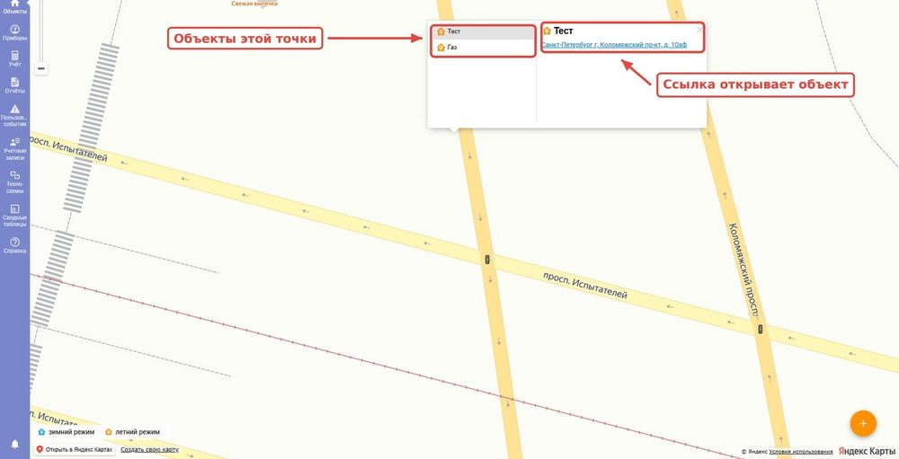
Кадр 4.6-4Открытая метка: слева список объектов точки — «Тест» и «Газ», справа карточка выбранного объекта с адресом-ссылкой.
Карта отвечает на вопрос «где», а не «что со связью»Здесь видно расположение объектов и режим — зимний или летний. Состояние связи смотрят не здесь: счётчики подключённых и отключённых модемов на главной странице, статья 3.1. Не ищите на карте красные точки аварий — их там нет.
Если не получилось
Что видите
Почему
Что сделать
Объект не появился на карте
Адрес выбран не из справочника или не заполнен
Откройте карточку объекта и выберите адрес из подсказок адресного реестра — статья 4.1.
Вместо нескольких объектов одна метка с цифрой
Объекты стоят по одному адресу
Щёлкните метку: слева будет список всех объектов этой точки.
Карта открылась пустой
Ни у одного объекта нет адреса из справочника либо в кабинете нет объектов
Проверьте адреса объектов. Карта строится только по адресам государственного реестра.
Как посмотреть данные так, как их смотрит диспетчер каждое утро.
Что понадобится
точки учёта заведены и данные приходят
Порядок действий
1
Откройте раздел «Учёт» и выберите ресурс
Слева список: ХВС, ГВС, ГВС (раздельный и общий учёт), ТС, ТС в паре, электроэнергия, газ, сточные воды, вентиляция, без ресурса. Ниже — «Все точки учёта», «Файлы на ТУ», «Контуры регуляторов», «Наличие архива в точках» и «Источники/потребители». Для ежедневного просмотра берите «Все точки учёта».
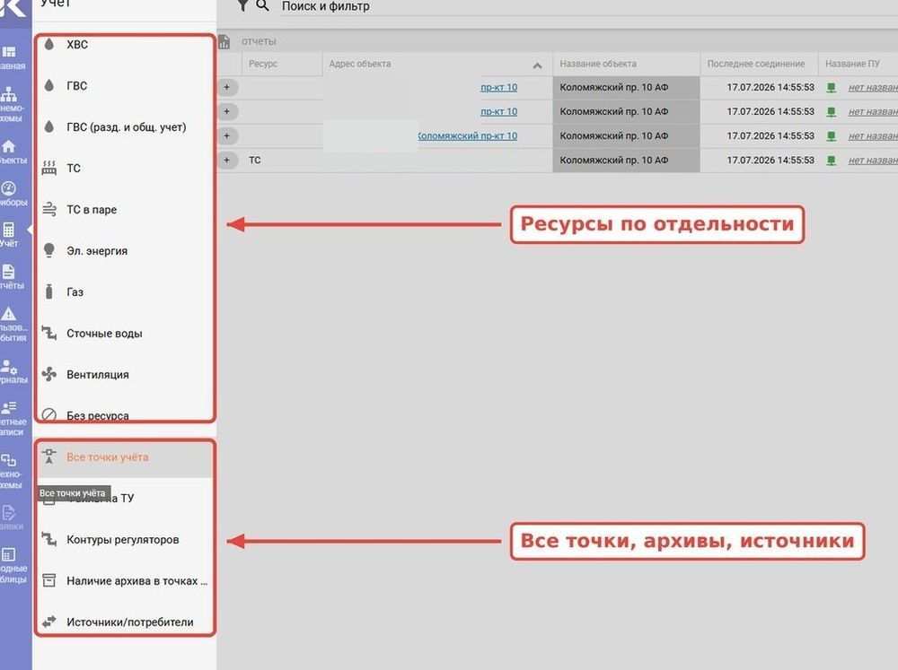
Кадр 5.1-1Раздел «Учёт» с раскрытым списком: ХВС, ГВС, ГВС (раздельный и общий учёт), ТС, ТС в паре, электроэнергия, газ, сточные воды, вентиляция, без ресурса, а ниже «Все точки учёта», «Файлы на ТУ», «Контуры регуляторов», «Наличие архива в точках» и «Источники/потребители».
2
Прочитайте таблицу слева направо
Точка учёта, ресурс, адрес и название объекта, последнее соединение, прибор и его серийный номер, модель, значок предупреждения, количество и примечание. Внизу экрана переключатель «Тип архива» — таблица показывает значения по выбранному типу.
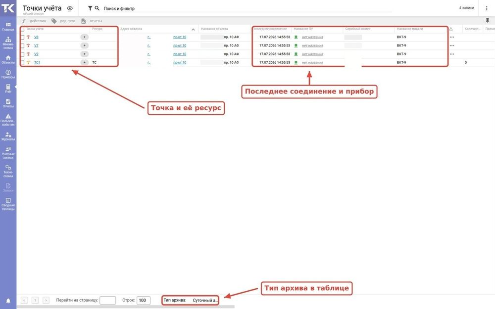
Кадр 5.1-2Общий список точек учёта: точка, ресурс, адрес и название объекта, последнее соединение, прибор, серийный номер, модель, значок предупреждения и количество. Внизу переключатель «Тип архива».
3
Щёлкните по названию точки
Откроется карточка: слева объект, владелец, модем, прибор, ресурс и нагрузки, справа «Просмотр данных» с вкладками «Сырые данные» и «Унифицированные данные», ниже «Настроечные параметры», считанные с прибора, и «Задания» — расписание опроса.
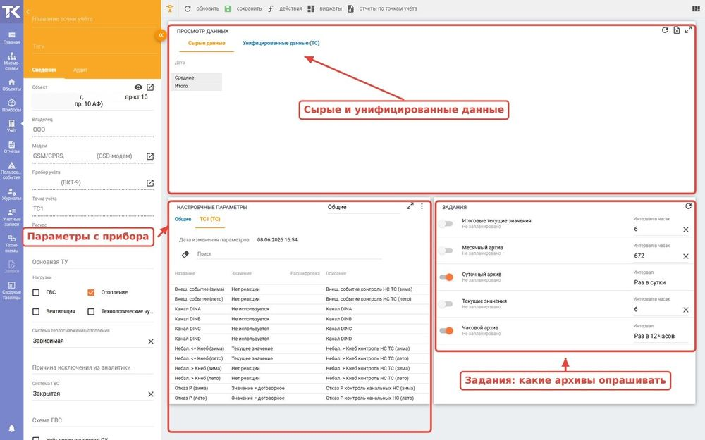
Кадр 5.1-3Карточка точки учёта: слева объект, владелец, модем, прибор, ресурс и нагрузки; справа «Просмотр данных» с вкладками «Сырые данные» и «Унифицированные данные», ниже «Настроечные параметры», считанные с прибора, и «Задания» — часовой, суточный, месячный архив и текущие значения с интервалами.
4
Проверьте «Наличие архива в точках» и «Источники/потребители»
Первый подраздел отвечает на вопрос «где не хватает данных» по всему парку. Второй показывает связку источник — потребитель, если объекты в кабинете связаны между собой.
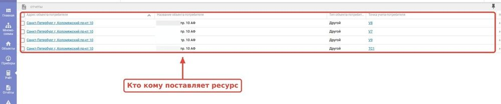
Кадр 5.1-4Подраздел «Источники/потребители»: адрес и название объекта-потребителя, тип объекта и точка учёта-потребителя.
5
Загляните в «отчеты» над таблицей
Оттуда по выбранным точкам открываются: карта, точки учёта с интегральными значениями, задания точек учёта, наличие архива, подробная информация и файлы на ТУ.
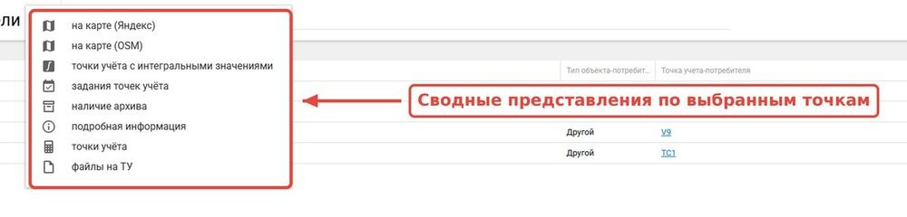
Кадр 5.1-5Меню «отчеты» в разделе «Учёт»: на карте (Яндекс), на карте (OSM), точки учёта с интегральными значениями, задания точек учёта, наличие архива, подробная информация, точки учёта, файлы на ТУ.
Смотрите на время последнего соединения, а не только на цифрыЗначение может выглядеть нормальным, но быть суточной давности. Колонка «Последнее соединение» — первое, на что стоит смотреть утром. Второе — значок предупреждения в таблице: он отмечает точки, по которым платформа видит проблему.
Если не получилось
Что видите
Почему
Что сделать
Значение есть, но старое
Опрос не проходит, а последнее удачное значение осталось
Смотрите «Последнее соединение»: если оно старое, проблема в связи, а не в данных.
Точка есть, а данных по ней нет
В «Заданиях» карточки точки не включён нужный архив
Откройте карточку точки, блок «Задания»: часовой, суточный, месячный архив и текущие значения включаются отдельными переключателями.
Не нахожу свою точку в списке ресурса
Ресурс у точки не задан или задан другой
Откройте «Все точки учёта» или «Без ресурса» — там видно все точки кабинета независимо от ресурса.
Откуда берутся числа для отчёта и для разбора спора с ресурсной организацией.
Что понадобится
точка учёта заведена и данные идут — статья 4.4
понимание разницы между текущими показаниями и архивом — статья 2.4
Порядок действий
1
Откройте карточку точки учёта и разверните «Просмотр данных»
Отдельной вкладки «Архив» нет: архив лежит в том же виджете «Просмотр данных», что и текущие показания. У виджета две вкладки — «Сырые данные» (как отдал прибор) и «Унифицированные данные (ТС)» (приведённые платформой к единому виду). Значок в правом верхнем углу разворачивает виджет на весь экран — только там появляются настройки.
Кадр 5.2-1Карточка точки учёта: виджет «Просмотр данных» с вкладками «Сырые данные» и «Унифицированные данные (ТС)». Значок в правом верхнем углу разворачивает виджет на весь экран, где появляются настройки периода и типа архива.
2
Задайте тип архива и период
В строке сверху выберите «Тип архива». Их восемь: минутный, получасовой, часовой, суточный, месячный, а также текущие значения, текущий архивируемый и итоговые текущие значения. Для отчётности нужен суточный или месячный, для разбора аварии — часовой. «Тип даты: как на приборе» означает, что сутки считаются по часам вычислителя.
Кадр 5.2-2Развёрнутый просмотр данных: начало и конец периода, «Тип архива» (здесь суточный), «Тип даты» — «Как на приборе»; справа указано, по какому объекту, прибору и точке показаны данные. Слева внизу переключение между сырыми и унифицированными данными.
3
Посмотрите, за какой период архив вообще существует
Внизу экрана платформа сама пишет «Дата первого суточного архива» и «Дата первого часового архива» — это реальная глубина по этой точке, а не общее правило. Там же тумблер «Отображение пустых строк» и поле «Сортировка». Последние две строки таблицы — «Средние» и «Итого» за выбранный период.
Кадр 5.2-3Низ экрана: тумблер «Отображение пустых строк», поле «Сортировка», а справа — «Дата первого суточного архива» и «Дата первого часового архива»: реальная глубина архива по этой точке. В таблице последними идут строки «Средние» и «Итого».
4
Если архива нет — проверьте «Задания»
В карточке точки учёта есть блок «Задания»: у каждого типа архива свой тумблер и интервал. Оранжевый — платформа забирает этот архив сама, серый — не забирает вообще. В примере на снимке суточный собирается раз в сутки, часовой раз в 12 часов, а месячный выключен.
Кадр 5.2-4Блок «Задания» в карточке точки учёта: у каждого типа архива свой тумблер и интервал. Оранжевый — платформа собирает архив сама (суточный раз в сутки, часовой раз в 12 часов), серый — не собирает (месячный, текущие и итоговые текущие значения).
5
Разовый дозапрос архива
Если нужно добрать данные здесь и сейчас, откройте карточку объекта, в блоке «Точки учёта» отметьте точку галочкой и нажмите «действия». В меню, кроме «активировать» и «деактивировать», есть подменю с теми же типами архивов — выбранный будет запрошен у прибора вне расписания.
Кадр 5.2-5Карточка объекта, блок «Точки учёта»: точка отмечена галочкой, в меню «действия» — «активировать», «деактивировать» и подменю с типами архивов: минутный, получасовой, часовой, суточный, месячный, текущие значения, текущий архивируемый, итоговые текущие значения.
6
Выгрузите нужный срез
Значок Excel в правом верхнем углу даёт выбор: «выгрузить унифицированные данные» или «выгрузить сырые данные». Подробнее — статья 5.5.
Кадр 5.2-6Меню выгрузки в просмотре данных: «выгрузить унифицированные данные» и «выгрузить сырые данные».
Если архива нет — скорее всего, его никто не собираетПрежде чем искать проблему в связи или в приборе, откройте «Задания» на точке учёта. Выключенный тумблер означает, что платформа этот архив не запрашивает вообще: в просмотре данных будет пусто, сколько ни меняй период. Это самая частая причина «пропавшего» месячного архива.
Если не получилось
Что видите
Почему
Что сделать
Выбрал месячный архив — пусто
Задание на месячный архив выключено
Включите тумблер в блоке «Задания» на точке учёта или дозапросите архив вручную через «действия» на объекте.
Часового архива за старый период нет
Глубина архива ограничена
Посмотрите внизу экрана «Дата первого часового архива» — раньше этой даты данных нет. Для старых периодов берите суточный архив, его глубина обычно больше.
В архиве дыра за несколько дней
Связь пропадала, данные ещё не добраны или память прибора переполнилась
Дозапросите архив вручную через «действия». Если дыра осталась — глубина памяти прибора закончилась, это уже не восстановить.
Галочка в столбце NS означает, что за эти сутки прибор отметил нештатную ситуацию, а NSCodes1–4 — её коды. Расшифровка кодов — в руководстве на вычислитель.
Самый быстрый способ увидеть провал в данных и ход потребления — не в таблице, а на графике под ней.
Что понадобится
данные хотя бы за две недели, иначе смотреть нечего
Порядок действий
1
Откройте просмотр данных точки и задайте период
Сверху «Начало периода» и «Конец периода», рядом «Тип архива» — часовой, суточный, месячный — и «Тип даты»: «Как на приборе» показывает время так, как его записал сам прибор. Справа видно, к какому объекту, прибору и точке относится таблица. Под таблицей строки «Средние» и «Итого» за выбранный период.
Кадр 5.3-1Просмотр данных точки: сверху начало и конец периода, тип архива «Суточный архив» и тип даты «Как на приборе», справа объект, прибор и точка. Под таблицей строки «Средние» и «Итого» за период.
2
Нажмите «показать график»
График появится под таблицей и построится по тем же данным. В легенде внизу перечислены параметры, которые на нём отложены. Кнопка «скрыть график» убирает его обратно.
Кадр 5.3-2Та же таблица с раскрытым графиком: кнопка «скрыть график», переключатель «Отображение пустых строк», «Сортировка», а справа «Дата первого суточного архива» и «Дата первого часового архива». Внизу легенда параметров графика.
3
Уберите пустые строки и задайте сортировку
Переключатель «Отображение пустых строк» скрывает даты, по которым архива нет. «Сортировка» разворачивает таблицу от старых записей к новым и обратно.
4
Посмотрите «Дату первого суточного архива» и «Дату первого часового архива»
Две даты внизу справа показывают, с какого момента у точки вообще есть история. Раньше этих дат данных нет, и никакая настройка их не добавит.
5
Выгрузите данные, если нужно
Значок Excel в правом верхнем углу сохраняет таблицу файлом — статья 5.5.
Пустые строки — это и есть ответ о полноте данныхОставьте «Отображение пустых строк» включённым, и пропуски будут видны как есть: дата в таблице стоит, а значений нет. Это самый прямой аргумент в разговоре о недостающих сутках — и самый честный. Скрывать пустые строки удобно для просмотра, но не для разбора.
Если не получилось
Что видите
Почему
Что сделать
В таблице пусто за весь период
Период выбран раньше первого архива
Посмотрите «Дата первого суточного архива» внизу справа: раньше этой даты данных нет.
Строки есть, а значения нулевые
Прибор в этот период не считал или архив пришёл пустым
Посмотрите столбцы NS и NSCodes: там прибор отмечает нештатные ситуации за эти сутки.
Как достать данные из кабинета, чтобы приложить к письму, счёту или акту.
Что понадобится
данные за нужный период в архиве
Порядок действий
1
Откройте просмотр данных точки и задайте период
В файл попадёт ровно то, что вы видите на экране: тот же период, тот же тип архива, та же сортировка. Проверьте их до выгрузки, а не после.
Кадр 5.5-1Просмотр данных точки: заданы период, тип архива и сортировка, в правом верхнем углу значок выгрузки в Excel.
2
Нажмите значок Excel и выберите, что выгружать
Два варианта: «выгрузить унифицированные данные» — приведённые к единому виду, и «выгрузить сырые данные» — как их отдал прибор. Для передачи в ресурсную организацию обычно нужны унифицированные, для разбора спорной ситуации — сырые.
Кадр 5.5-2Меню выгрузки: «выгрузить унифицированные данные» и «выгрузить сырые данные».
3
Проверьте файл
Откройте его и сверьте период и число строк с тем, что было на экране. Если включено скрытие пустых строк, их не будет и в файле.
Архив и отчёт — не одно и то жеВыгрузка из просмотра данных — это сырые или унифицированные записи по одной точке. Отчёт — это форма с перерасчётами по правилам коммерческого учёта, пригодная для ресурсной организации, раздел 06. В спорной ситуации нужны оба: отчёт как документ и выгрузка архива как доказательство.
Если не получилось
Что видите
Почему
Что сделать
В файле не тот период
Период задаётся на экране до выгрузки
Измените «Начало периода» и «Конец периода», дождитесь обновления таблицы и выгрузите заново.
В файле меньше строк, чем ожидали
Включено скрытие пустых строк
Включите «Отображение пустых строк» — тогда в файл попадут и даты без данных.
Не понимаю, какой из двух файлов нужен
Унифицированные и сырые данные отличаются приведением к единому виду
Ресурснику и в отчётность — унифицированные. Для разбора с сервисным центром или производителем прибора — сырые.
В платформе много готовых форм. Разобраться, какая нужна вам, проще, если понимать, как они делятся.
Все формы лежат в разделе «Отчёты». Он разбит на пять подразделов: «Системные» — готовые формы платформы, их больше сотни; «Пользовательские» — формы, собранные под конкретный кабинет; «История» — что и когда формировалось; «Подписки» — рассылки по расписанию; «Тексты писем» — сопроводительный текст к этим рассылкам.
В списке форм есть колонка «Запускать из». Она важнее, чем кажется: форма запускается либо из прибора учёта, либо из точки учёта, либо из объекта, либо из самого раздела «Отчёты». Если вы ищете форму не там, откуда она запускается, вы её не найдёте.
Отчёт — это не выгрузка архива. Внутри отчёта считаются перерасчёты по правилам коммерческого учёта: начисления, корректировки, нештатные периоды. Именно поэтому его принимает ресурсная организация.
Таблица
Тип в списке
Что это
Когда нужен
По форме РСО
Формы, согласованные с ресурсоснабжающими организациями
Главный тип: именно эти отчёты уходят ресурснику
Акт
Акт снятия показаний — ГВС, ХВС и сточные воды, электроэнергия, счётчики
Для подписи с потребителем или подрядчиком
Специализированный
Ведомости, журналы учёта, карточки регистрации, контроль качества ГВС и температурного графика
Для собственного контроля и разбора
Сводный
Свод по группе точек или объектов
Когда нужен итог по парку, а не по одной точке
Выгрузка
Машинный файл для передачи в другую систему
Обмен данными, а не чтение человеком
Стандартный по прибору
Форма, привязанная к типу вычислителя
Когда нужен «родной» вид отчёта прибора
Форму под конкретную ресурсную организацию настраиваем мыЕсли ресурсник требует свой вид отчёта, не собирайте его сами методом перебора: сообщите менеджеру Теплоком, приложите образец формы, которую он принимает. Настройка входит в сопровождение.
Главный отчёт месяца: тот, который уходит ресурсной организации и от которого зависят начисления.
Что понадобится
образец формы, которую принимает ваша ресурсная организация
заполненные договорные параметры на точках — статья 2.2
данные за полный расчётный период в архиве
Порядок действий
1
Откройте «Отчёты» → «Системные»
Готовых форм здесь больше сотни, поэтому листать список бесполезно. Смотрите не на названия, а на две колонки: «Тип» — что это за форма, и «Запускать из» — откуда она вызывается.
Кадр 6.2-1Раздел «Отчёты», подраздел «Системные»: 109 готовых форм. Колонка «Тип» показывает вид формы — «По форме РСО», «Акт», «Сводный», «Выгрузка», «Специализированный», «Универсальный», «Стандартный по прибору». Колонка «Запускать из» говорит, откуда форма вызывается: из приборов учёта, точек учёта, объектов или из самого раздела «Отчёты».
2
Отфильтруйте по типу «По форме РСО»
Это и есть формы под ресурсоснабжающие организации. Откройте фильтр, в поле «Типы отчёта» выберите «По форме РСО», при необходимости добавьте свою организацию — и из сотни форм останется одна-две. Счётчик условий слева показывает, сколько фильтров сейчас включено.
Кадр 6.2-2Фильтр над списком: заданы два условия — организация и тип отчёта «По форме РСО». В выдаче осталась одна форма — «Отчёт по форме АО "ТЭК СПб"». Слева от фильтра переключатель «Все / Избранные» и кнопка «создать» для собственной формы.
3
Откройте форму и заполните параметры слева
Обязательный минимум — прибор (или «Выбрать все», или отбор по тегам) и период. Остальное зависит от формы: температура холодной воды, режим «Зима» или «Лето», расчёт по среднему, тип даты, перерасчёты тепла и ГВС. «Тип даты: как на приборе» означает, что сутки берутся по часам вычислителя, а не по времени сервера — для отчётности это правильный вариант.
Кадр 6.2-3Открытая форма отчёта: слева панель параметров — теги, прибор, начало и конец периода, температура холодной воды, режим, расчёт по среднему, тип даты, перерасчёт тепла и ГВС, параметры отчёта; сверху синяя кнопка «сформировать отчёт».
4
Нажмите «сформировать отчёт» и прочитайте шапку
Шапка собирается не из отчёта, а из карточек: абонент и адрес — из объекта, вычислитель, расходомеры и срок поверки — из прибора, договор и нагрузки — из договорных параметров точки. Пустые поля в шапке значат, что карточка не заполнена. Прочерки в строках — что за эти сутки данных нет.
Кадр 6.2-4Сформированный отчёт: шапка с абонентом, адресом, установленными приборами, сроком поверки и схемой подключения; строки договорных нагрузок пустые; в таблице прочерки за те сутки, по которым данных нет.
5
Сохраните файл
Кнопка «Сохранить» даёт двенадцать форматов. На практике нужны три: PDF — подписать и отправить, Word — если ресурсник правит форму у себя, Excel — чтобы сверить цифры. Рядом отдельная кнопка «Печатать» — сразу на принтер, минуя файл.
Кадр 6.2-5Меню «Сохранить»: Report Snapshot, Adobe PDF, Microsoft PowerPoint, HTML, Текст, RTF, Microsoft Word, OpenDocument Writer, Microsoft Excel, OpenDocument Calc, Данные, Изображение. Рядом — отдельная кнопка «Печатать».
6
Сверьте первый отчёт с ресурсной организацией
Отправьте первый экземпляр на согласование, а не в оборот. Дешевле поправить форму сейчас, чем спорить о начислениях в конце сезона.
Пустая шапка — не сбой отчёта, а незаполненные карточкиДоговор, абонент, обслуживающая организация, договорные нагрузки — всё это отчёт берёт из карточек объекта, прибора и точки. Форма сформируется и с пустой шапкой, но ресурсник такой документ вернёт. Заполните карточки один раз до первого отчёта — статья 2.2.
Если не получилось
Что видите
Почему
Что сделать
Не нахожу нужную форму
Ищете по названию среди сотни форм
Фильтруйте по типу «По форме РСО», а не листайте список. Если формы вашего ресурсника там нет — обратитесь к менеджеру Теплоком, форму настроят.
Форма есть, но не открывается из прибора
Форма запускается из другой сущности
Посмотрите колонку «Запускать из»: часть форм вызывается из точки учёта, часть из объекта, часть из прибора. Открывайте оттуда, откуда положено.
В шапке пустые договорные нагрузки
Не заполнены договорные параметры точки
Заполните их в карточке точки учёта — статья 2.2. Без них ресурсная организация отчёт не примет.
Вместо цифр прочерки
За эти сутки данных в архиве нет
Проверьте архив за период — статья 5.2 — и связь с модемом в карточке объекта. Прочерки в начале периода обычно означают, что прибор подключили позже.
Ресурсник не принял отчёт
Форма не согласована или не та схема измерения
Возьмите у ресурсника образец и передайте нам. Проверьте схему подключения в шапке отчёта — она должна совпадать с фактической.
Настраивается один раз — и месячный отчёт больше не требует участия оператора.
Что понадобится
форма отчёта уже подобрана и согласована — статья 6.2
получатели заведены в кабинете как учётные записи
Порядок действий
1
Начните с самого отчёта
Подписка — это не отдельная сущность, а надстройка над отчётом. Экран разделён на две вкладки: «Отчёт» — что отправляем, «Подписка» — кому и когда. Слева та же панель параметров, что и при обычном формировании: прибор, период, режим, тип даты. Задайте их так же, как в статье 6.2.
Кадр 6.3-1Экран создания подписки. Две вкладки: «Подписка» — кому и как отправлять, «Отчёт» — что именно отправлять. Слева та же панель параметров отчёта, что и при обычном формировании. Кнопка «создать» вверху сохраняет подписку.
2
Перейдите на вкладку «Подписка» и заполните шапку
«Название» — как рассылка будет называться в списке. «Текст письма» — сопроводительный текст, который увидит получатель. «Формат экспорта» определяет, чем отчёт придёт во вложении: по умолчанию Pdf, значок рядом открывает настройки формата.
Кадр 6.3-2Верх вкладки «Подписка»: название подписки, текст письма и формат экспорта — здесь Pdf. Значок справа от формата открывает его настройки.
3
Выберите расписание
Пять вариантов: «Однократно», «Ежедневно», «Еженедельно», «Ежемесячно» и «Ежемесячно (пар.)». Для отчётности ресурсной организации нужен месячный вариант. «Дата начала» задаёт, с какого момента расписание начинает работать, — поставьте её на 2–3 число, а не на 1-е.
Кадр 6.3-3Расписание: пять вариантов — «Однократно», «Ежедневно», «Еженедельно», «Ежемесячно» и «Ежемесячно (пар.)». Ниже «Дата начала» — с какого момента расписание начинает действовать.
4
Назначьте ответственного и подписчиков
«Ответственный» и «Ответственная организация» — кто отвечает за рассылку. «Подписчики» — получатели: они выбираются из учётных записей кабинета, рядом с фамилией подставляется почта. Кнопка «+ подписчик» добавляет следующего. Поле «Теги подписчиков» позволяет подписать не человека, а тег — тогда рассылка сама дойдёт до всех, кому этот тег присвоен.
Кадр 6.3-4Нижняя часть: ответственный за рассылку и ответственная организация, список подписчиков — получатели выбираются из учётных записей кабинета, поле «Теги подписчиков» для подписки по тегу и кнопка «+ подписчик». Личные данные на снимке закрыты.
5
Нажмите «создать» и дождитесь первой отправки
Кнопка «создать» вверху экрана сохраняет подписку. Не считайте задачу закрытой, пока не увидите первое письмо: до этого момента вы проверили настройку, а не результат.
Это то место, где экономия становится измеримойРучная подготовка месячного отчёта по парку занимает часы. Подписка убирает их полностью. Если считаете эффект от диспетчеризации — считайте здесь, а не на «удобстве интерфейса».
Если не получилось
Что видите
Почему
Что сделать
Нужного получателя нет в списке подписчиков
Подписчики берутся из учётных записей кабинета
Заведите ему учётную запись или подпишите по тегу. Если получатель внешний — например, специалист ресурсной организации, — уточните у менеджера Теплоком, как его правильно добавить.
Пришёл не тот отчёт
Параметры взяты с вкладки «Отчёт», а её не проверили
Откройте подписку, перейдите на вкладку «Отчёт» и сверьте прибор, период и режим. Подписка отправляет ровно то, что настроено там.
Отчёт пришёл пустым
К моменту отправки данных за период ещё не было
Сдвиньте дату начала на 2–3 число: месячный архив закрывается 1-го числа.
Письмо не пришло получателю
Почта с опечаткой или письмо в спаме
Проверьте адрес в учётной записи, попросите получателя посмотреть спам и добавить отправителя в доверенные.
Непонятно, чем «Ежемесячно (пар.)» отличается от «Ежемесячно»
Второй месячный вариант с дополнительными параметрами
Мы этот вариант в кабинете ещё не проверяли. Прежде чем ставить его на поток, создайте одну подписку каждого вида и сравните, что придёт.
Мелочь, которая экономит время каждый месяц: из 109 форм остаются три ваши.
Что понадобится
вы уже знаете, какие формы используете — статья 6.2
Порядок действий
1
Отметьте форму галочкой в списке
В разделе «Отчёты» → «Системные» поставьте галочку слева от нужной формы. Счётчик в правом верхнем углу покажет «1 выбрано». Отмечать можно сразу несколько форм — тогда они добавятся в избранное одним действием.
Кадр 6.4-1Список системных отчётов: форма отмечена галочкой слева, справа вверху счётчик «109 записей / 1 выбрано». Отметить можно сразу несколько форм.
2
Нажмите «ред. избранное» и выберите «добавить в избранное»
Кнопка находится в панели над таблицей, рядом с «действия» и «ред. теги». В меню два пункта: «добавить в избранное» и «убрать из избранного» — вторым же пунктом форма из избранного убирается.
Кадр 6.4-2Панель над таблицей: «действия», «ред. теги», «ред. избранное». Кнопка «ред. избранное» раскрывает два пункта — «добавить в избранное» и «убрать из избранного». Тем же приёмом формам проставляются теги.
3
Включите фильтр «Избранные»
Откройте фильтр и в левой колонке переключитесь с «Все» на «Избранные». Над списком появится оранжевый чип «Избранные», а в таблице останутся только ваши формы. Здесь же кнопка «создать», если понадобится собственная форма отчёта.
Кадр 6.4-3Фильтр с условием «Избранные»: в списке осталась одна отмеченная форма. В левой колонке фильтра переключатель «Все / Избранные» и кнопка «создать» для собственной формы отчёта.
Отметьте формы за оператора, а не только за себяЕсли отчёты делает другой сотрудник, избранное нужно ему, а не вам: отметка привязана к пользователю. Покажите ему этот шаг при обучении — иначе он будет искать форму среди ста девяти каждый месяц.
Если не получилось
Что видите
Почему
Что сделать
«ред. избранное» не срабатывает
Ни одна строка не отмечена
Сначала поставьте галочку в списке, потом нажимайте кнопку. Ориентир — счётчик «выбрано» в правом верхнем углу.
Отметил форму, а в избранном её нет
Фильтр остался в положении «Все»
Переключите фильтр на «Избранные». Без этого список показывает все формы, а не только отмеченные.
Нужно убрать форму из избранного
Список избранных разросся
Отметьте её галочкой и выберите в том же меню «убрать из избранного».
Из всех возможных уведомлений эти четыре закрывают почти все случаи, когда о проблеме нужно узнать сегодня, а не в конце месяца.
Уведомление имеет смысл, только если на него кто-то реагирует. Поэтому включайте не все события подряд, а эти четыре — и назначьте каждому получателя.
Таблица
Событие
Что означает
Кому и как быстро
Нет данных более 24 часов
Связь пропала, сел баланс сим-карты, отключилось питание модема
Ответственному за диспетчеризацию, в рабочее время
Перетоп и недотоп
Температура вышла за пределы графика
Обслуживающей организации, в рабочее время; в отопительный сезон — сразу
Слабый сигнал модема ниже 30%
Связь скоро оборвётся совсем
Техническому специалисту, не срочно, но в план работ
Изменение настроек прибора
Кто-то менял конфигурацию прибора
Ответственному за метрологию — это важно в споре о показаниях
Уведомление без получателя не работаетСобытие, которое приходит «на общий адрес», не читает никто. У каждого правила должен быть человек, а не отдел. И у него должно быть понятно, что делать: событие без регламента реакции превращается в фоновый шум.
В разделе два подраздела. «Группы событий» — сами правила, «Активные события» — то, что уже сработало и ещё не закрылось. Настраиваем в первом, проверяем во втором.
Кадр 7.2-1Раздел «Пользовательские события» в левом меню: подраздел «Группы событий» — сами правила, подраздел «Активные события» — то, что уже сработало и ещё не закрылось.
2
Посмотрите на список: одна строка — одно правило
Колонка «Сущность» показывает, к чему правило привязано: к модему или к точке учёта. «Фильтры» — по каким тегам оно отбирает записи. «Активность» — работает правило или отключено.
Кадр 7.2-2Список групп событий. Одна строка — одно правило. Колонка «Сущность» показывает, к чему правило привязано (модем или точка учёта), «Фильтры» — по каким тегам оно отбирает записи, «Активность» — работает правило или отключено. Оранжевая кнопка «+» внизу справа создаёт новую группу.
3
Создайте группу
Оранжевая кнопка «+» внизу справа открывает диалог: название группы, сущность и примечание. Сущность выбирается один раз и определяет, какие события будут доступны внутри: у модема это связь и сигнал, у точки учёта — параметры теплоснабжения. Называйте группу по смыслу — «Связь», «Работа прибора», — потому что именно это название вы увидите в списке.
Кадр 7.2-3Диалог «Создание группы событий»: название группы (обязательно), сущность и примечание. Сущность выбирается один раз и определяет, какие события будут доступны внутри группы.
4
Заполните четыре блока в карточке группы
«Записи для анализа» — к каким конкретно модемам или точкам применяется правило. «События» — что именно отслеживаем. «Подписчики» — кто и как получает оповещение. «Организации, имеющие доступ к группе событий» — кто ещё видит это правило. Внизу справа — фактические срабатывания с вкладками «активные» и «завершённые».
Кадр 7.2-4Карточка группы событий. Слева — сущность, фильтры и активность. Справа четыре блока: «Записи для анализа» — к каким модемам или точкам применяется правило; «События» — что именно отслеживаем; «Подписчики» — кто получает оповещение и какими каналами; «Организации, имеющие доступ к группе событий». Внизу справа — фактические срабатывания с вкладками «активные» и «завершённые». Личные данные закрыты.
5
Добавьте событие и задайте порог
Кнопка «+» в блоке «События» открывает диалог. «Событие» — тип из справочника, например «Модем не на связи X часов». «Пользовательское название» — то, что человек увидит в уведомлении: лучше «Потеря связи», чем формулировка из справочника. Ниже обязательный параметр порога — на снимке 1 час. Тумблер «Активность» включает событие сразу.
Кадр 7.2-5Диалог «Добавление события»: тип события из справочника («Модем не на связи X часов»), своё название для уведомления («Потеря связи») и обязательный параметр порога — здесь 1 час. Тумблер «Активность» включает событие сразу.
6
Добавьте подписчиков и выберите каналы
Кнопка «+» в блоке «Подписчики». Получатель выбирается из учётных записей кабинета, фильтр по организации помогает его найти. Дальше два набора галочек: «Оповещать при» — возникновении, возобновлении и завершении события, и каналы — система АИИС, эл. почта, SMS, Telegram, Max. Галочка «при завершении» нужна не всегда: для потери связи она полезна, для разового события — лишний шум.
Кадр 7.2-6Диалог «Добавление подписчиков»: фильтр по организации, выбор подписчиков, блок «Оповещать при» — возникновении, возобновлении и завершении события, и блок каналов: система АИИС, эл. почта, SMS, Telegram, Max.
7
Проверьте на живом событии
Проще всего проверить правило на потере связи: отключите тестовый модем и дождитесь срабатывания. В блоке «События» внизу карточки на вкладке «активные» появится запись с меткой «Новое», временем возникновения и ссылкой прямо на объект и модем — из уведомления можно сразу перейти к проблеме. Когда связь восстановится, событие уйдёт на вкладку «завершённые». Пока вы не увидели первое срабатывание своими глазами, правило считается ненастроенным.
Кадр 7.2-7Блок «События» в карточке группы после срабатывания: на вкладке «активные» появилась запись «Модем не на связи более 1 ч.» с меткой «Новое», временем возникновения и ссылкой на объект и модем. Вкладка «завершённые» показывает события, которые уже закрылись. Личные данные закрыты.
Правило без подписчика молча ничего не делаетГруппа может быть активна, событие добавлено и даже сработать — но если в блоке «Подписчики» пусто, никто об этом не узнает. Событие попадёт только в «Активные события» внутри кабинета. Подписчики — обязательный четвёртый шаг, а не опция.
Если не получилось
Что видите
Почему
Что сделать
Уведомления не приходят
Нет подписчиков или не отмечены каналы
Откройте группу, проверьте блок «Подписчики»: в строке должны стоять «да» хотя бы в одном канале. Пустой список подписчиков — самая частая причина.
Нужного человека нет в списке подписчиков
Подписчики берутся из учётных записей кабинета
Заведите ему учётную запись. Внешнего получателя добавить напрямую нельзя — уточните порядок у менеджера Теплоком.
Не нахожу нужное событие в списке
У группы выбрана не та сущность
Сущность задаётся при создании группы и определяет набор доступных событий. Для связи и сигнала нужна сущность «Модем», для параметров теплоснабжения — «Точка учёта». Создайте отдельную группу с нужной сущностью.
Уведомлений слишком много
Порог задан слишком чувствительно или отмечены все три момента оповещения
Поднимите порог в параметрах события и снимите лишние галочки в «Оповещать при». Поток уведомлений, который перестают читать, хуже их отсутствия.
Правило создано, но не срабатывает
Отключена активность группы или самого события
Активность есть в двух местах: у группы (слева в карточке) и у каждого события в таблице. Проверьте оба.